1. 最初に知ること
このCADでは、3D空間に紙（作業平面）を置き、その紙へ正対して2D作図し、複数のワイヤーから面と板を作るのが基本です。
| 場所 | 役割 |
|---|---|
| 上のツールバー | 新規・保存・元に戻す・全体表示・設計/完成形/選択だけ表示・作図・変形をすぐ実行します。 |
| 左「モデル」 | 上端の検索欄で部材名や種類を絞り込みます。チェックで3D表示を切り替え、行のクリックで選択します。 |
| 左下「操作ガイド」 | 消えない手順表示です。水色の欄が次の1操作、その下が全手順です。「詳しい手順」で、このマニュアルの該当箇所を直接開きます。 |
| 中央「3D画面」 | 作図、選択、直接変形、測定を行います。選択中は橙色、マウスを置いた候補は色が変わります。 |
| 右上「1 平面～4 出力」 | 基本工程へ直接移動します。初心者はこの4ボタンを左から順に使えば、9タブを暗記する必要はありません。 |
| 右「作図と編集」 | 作図、作業平面、数値入力、編集、加工、面、出力、表示、情報の9つの詳細タブです。 |
| 右上のキューブ | 現在の模型と同じ向きに回転し、上下・前後・左右・角への正対、自由回転、選択への正対を行います。 |
同梱の確認用モデルを開く
- 選ぶ
- ファイル →「開く」
- ファイル
review-model.kcd- 確認
- 前面窓と左右ライトが開いた前面板、後部板材、成形治具が見えます。
迷ったら Esc。どの画面・入力欄にいても1回で「入力破棄 → 選択道具 → 選択解除」の白紙状態へ戻ります。直前の編集を戻すときは Ctrl+Z です。
初心者向けの進み方
- 右上「1 平面」で、作図したい位置と向きを確認します。
- 「2 作図」で線・円・断面を描きます。左下の水色欄だけを見れば、次に置く点が分かります。
- 断面を選び「3 面・板」で面、板厚、開口、治具を作ります。
- 板材または治具を選び「4 出力」で1:1図面、STL、STEPを保存します。
2. 視点操作
右上のキューブは模型の現在姿勢と常に同じ向きです。キューブをつかんで動かすと模型とキューブが一緒に連続回転し、離した場所から勝手に別方向へ移りません。
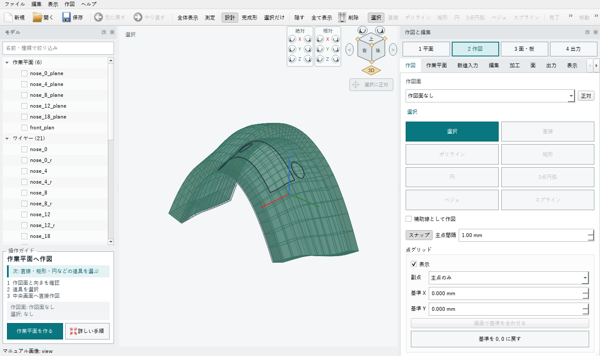
| 操作 | 結果 | 使う場面 |
|---|---|---|
| ホイール | 拡大・縮小 | 細部へ寄る、全体へ戻る。 |
| 中ドラッグ | 画面を平行移動 | 向きを変えず表示位置だけ動かす。 |
| 右ドラッグ | 画面を平行移動 | 中ボタンの代用。右クリックだけなら作図完了です。 |
| Shift+中ドラッグ | 自由回転 | 任意の方向から立体を見る。 |
| 左クリック | 選択または作図 | 通常操作。ドラッグしても視点は回りません。 |
| 「上」「下」「正」「後」「右」「左」 | クリックした標準面へ正対 | 2D図のように見る。 |
| 「3D」または角の黄色い菱形 | 斜め視点 | 立体形状を確認する。 |
| 「絶対」X/Y/Zの左右矢印 | 世界座標の固定X/Y/Z軸まわりに15°ずつ回転 | 模型の向きに影響されない軸で、正確に視点を刻む。左矢印が負、右矢印が正方向。 |
| 「相対」X/Y/Zの左右矢印 | 現在の見え方に追従するX/Y/Z軸まわりに15°ずつ回転 | Xは画面横、Yは画面縦、Zは模型へ向かう奥行き軸。現在姿勢から直感的に傾ける。 |
| Shift+絶対/相対の矢印 | 5°ずつ回転 | 15°では大きいときの微調整。 |
| キューブ左右の矢印 | 絶対Z軸を15°ずつ回転 | 少しだけ側面へ回す。 |
| キューブ上の回転矢印 | 相対Z軸を15°ずつ回転 | 模型の上下が傾いて見えるときに細かく直す。 |
| キューブの面または黄色い角をドラッグ | 移動量どおりに連続回転 | つかんだキューブと模型が同時に回り、上下を越えても引っ掛かりません。 |
| 「選択に正対」 | 選択物へ正対して中央表示 | 面、板、平面、ワイヤーを真正面から見る。 |
| 上部「全体表示」 | 現在の向きを保ったまま表示中の物が収まる | 模型を見失ったとき。 |
選択した板を真正面から見る
- 選ぶ
- 「選択」を押し、中央画面で板を1回クリック。
- 実行
- 右上の「選択に正対」。
- 結果
- 板の代表面が画面と平行になり、中央へ移動します。
- 失敗時
- 何も選ばれていない、または複数種類を選んでいないか左一覧で確認します。
3. 選択・表示
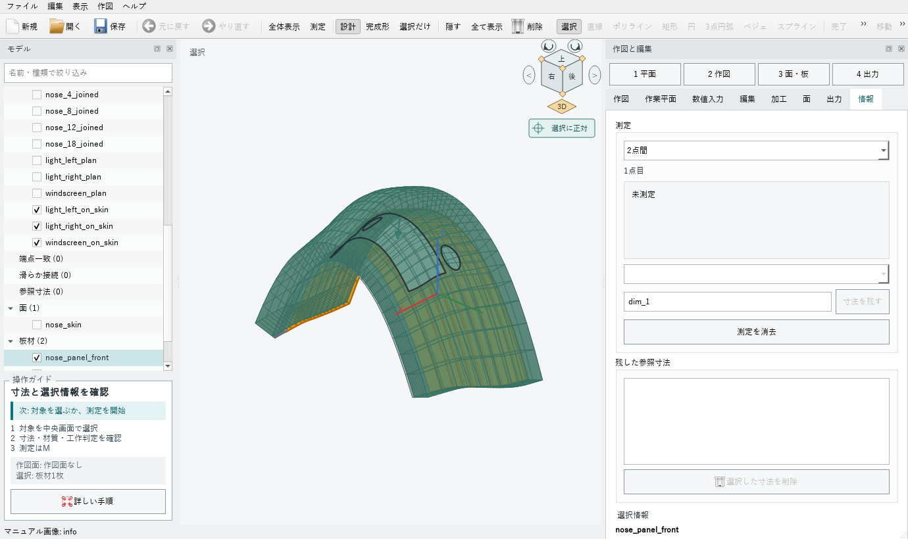
| 操作 | 結果 |
|---|---|
| 中央で左クリック | 1個だけ選択。背後に候補がある場合は見えている手前側を選びます。 |
| Ctrl+左クリック | 現在の選択へ追加、選択済みなら解除。複数ワイヤーを扱うときに使います。 |
| 空白を左クリック | 選択解除。 |
| 線・点へマウスを置く | 候補色が変わり、クリック前に対象を確認できます。 |
| 左のモデル一覧をクリック | 名前で確実に選択。複数は Ctrl+クリック。 |
| 左上「名前・種類で絞り込み」 | 一覧だけを部材名または「ワイヤー」「板材」などの種類で絞る。3D形状は隠しません。 |
| 左一覧のチェック | 対象の表示・非表示。選択状態とは別です。 |
| 上部「完成形」 / Ctrl+2 | 板材と立体だけを一時表示。作業平面、線、面、寸法、グリッドをまとめて退避します。 |
| 上部「選択だけ」 / Ctrl+3 | 先に選択した要素だけを一時表示。複雑な重なりの点検に使います。 |
| 上部「設計」 / Ctrl+1 | 通常の設計表示へ戻る。 |
| Ctrl+H | 選択中を隠す。 |
| Ctrl+Shift+H | すべて再表示。 |
| Delete | 選択対象を削除。依存物があるときは確認内容に従います。 |
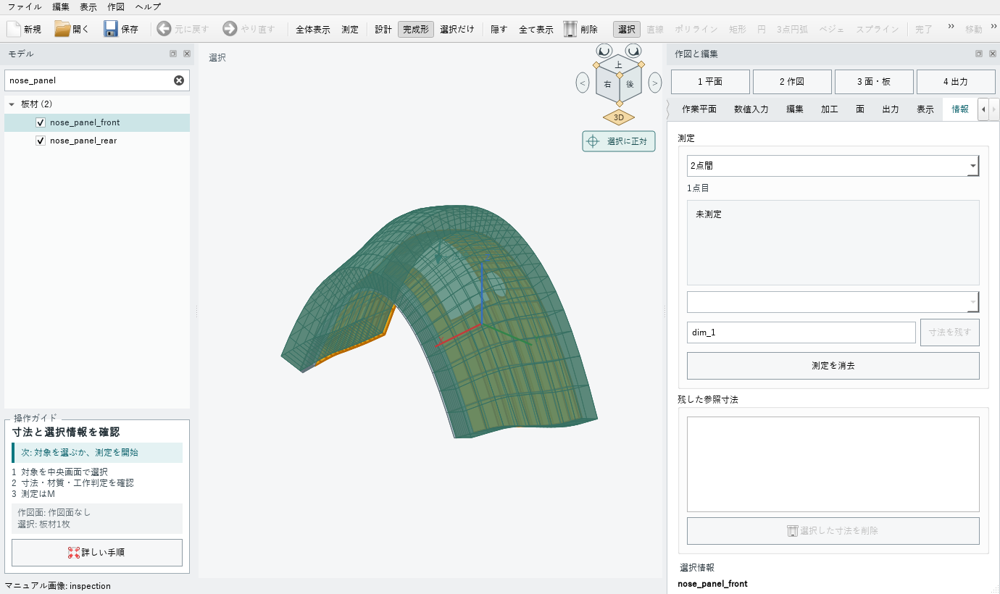
nose_panel で一覧を絞り込み、「完成形」で板材と立体だけを確認しています。- 部材を探す
- 左上へ名前の一部を入力。種類一式なら「板材」「ワイヤー」などを入力します。
- 完成形を見る
- 上部「完成形」。表示中の板材と立体だけへ自動で全体表示します。
- 一部だけ見る
- 中央または左一覧で対象を複数選び、上部「選択だけ」。
- 作業へ戻る
- 上部「設計」。検索欄右端の×で一覧の絞り込みも解除します。
線・面・板・背景の見た目を変える
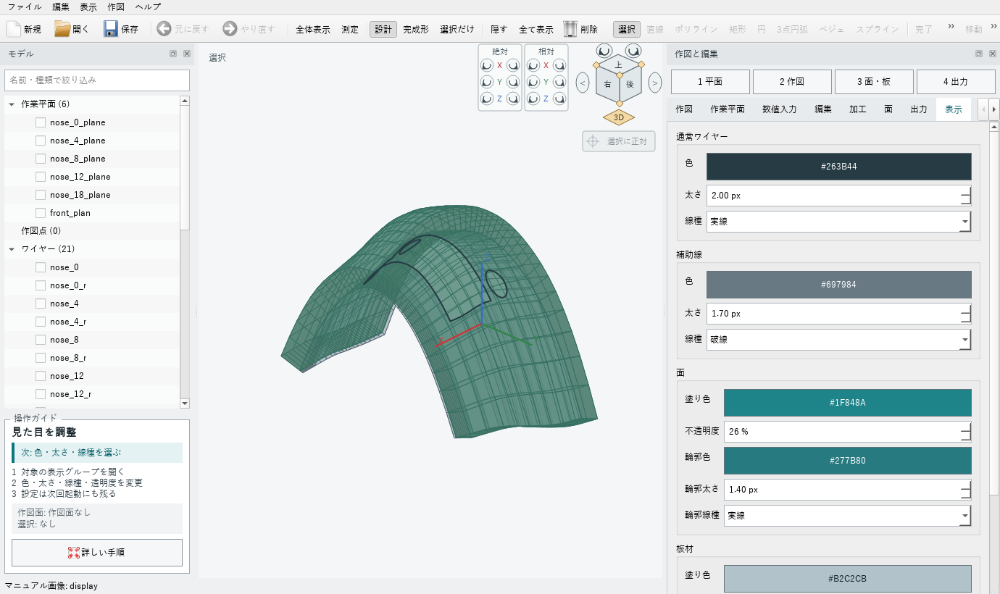
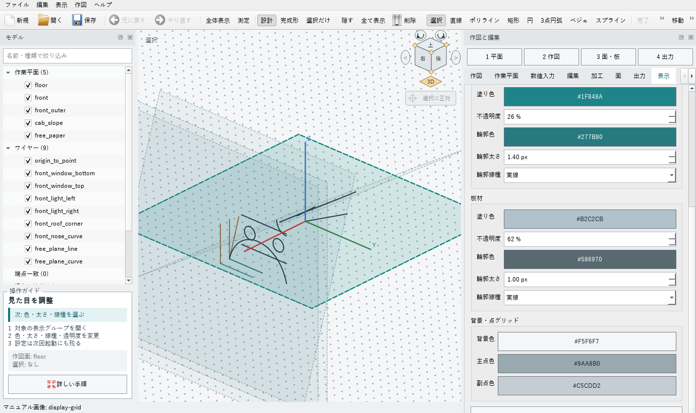
- 開く
- 右の「表示」タブ。
- ワイヤー
- 「通常ワイヤー」または「補助線」で色見本を押し、太さと実線・破線・点線・一点鎖線を選びます。
- 面・板材
- 塗り色と不透明度、輪郭色・太さ・線種を指定します。
- 背景・グリッド
- 下へスクロールし、背景色、主点色、副点色を指定します。
- 戻す
- 最下部の「表示設定を初期値に戻す」。
変更は中央画面へ即時反映され、次回起動にも残ります。選択中の橙色、ホバー候補色、基準線色は操作を見失わないため設定色より優先されます。
「設計・完成形・選択だけ」は一時的な見方なので、保存内容や元に戻す履歴を変更しません。左一覧のチェックと「隠す」はプロジェクトに保存される表示設定です。
選択順が形状へ影響する操作では、前から後ろなど意図した順に Ctrl+クリックしてください。「面」タブの選択数表示で確認できます。
4. 作業平面
作業平面は「3D空間内に自由に置ける紙」です。紙を保存せず、その向きから見るだけにもできます。
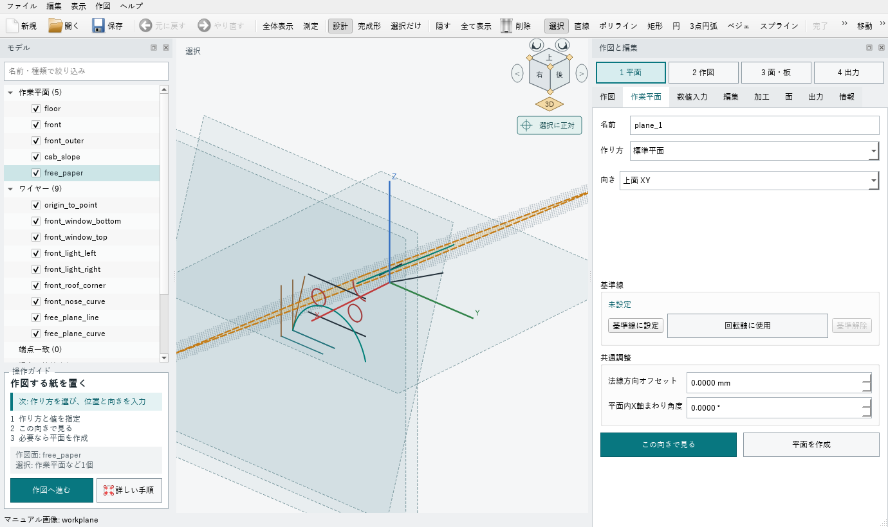
free_paper のように、標準面以外の位置・向きにも紙を置けます。共通手順
- 開く
- 右の「作業平面」タブ。
- 入力
- 名前と「作り方」を選び、方法別の値を入れます。
- 任意調整
- 「法線方向オフセット」と「平面内X軸まわり角度」。全方式で使用できます。
- 見るだけ
- 「この向きで見る」。モデル一覧に平面は増えません。
- 保存する
- 「平面を作成」。左の「作業平面」に追加されます。
| 作り方 | 入力するもの | 用途 |
|---|---|---|
| 標準平面 | 上面XY / 正面XZ / 側面YZ | 対象物の平面図、正面図、側面図。 |
| 点 + 法線 | 通過点XYZ、法線XYZ、横方向XYZ | 座標と向きが分かっている任意断面。 |
| 3点 | 点A、点B、点CのXYZ | 実形状上の3点を通る面。 |
| 既存平面からオフセット | 基準平面、共通調整の距離・角度 | 同じ向きの断面を前後へ量産。 |
| 軸まわりに回転 | 基準平面、軸の点・向き、基準角度 | 傾いた前面や肩部の断面。 |
3D上の辺を回転軸にする
- 「選択」で直線ワイヤーを1本選びます。
- 「基準線に設定」を押します。作業平面タブの基準線名が変わります。
- 作り方を「軸まわりに回転」にし、「回転軸に使用」を押します。
- 基準平面と角度を入力し、「この向きで見る」で確認後、「平面を作成」を押します。
3点は一直線上に置けません。法線ベクトルや軸方向も長さ0にはできません。エラー時は3点または方向値を見直してください。
5. 点グリッド
補助線を大量に描かず、JWCADのような一定間隔の点を目安に作図します。大きい点が主点、小さい点が副点です。主点は狙いやすく、副点は点間隔に応じて弱く吸着します。点へ常時強制的に丸めることはありません。
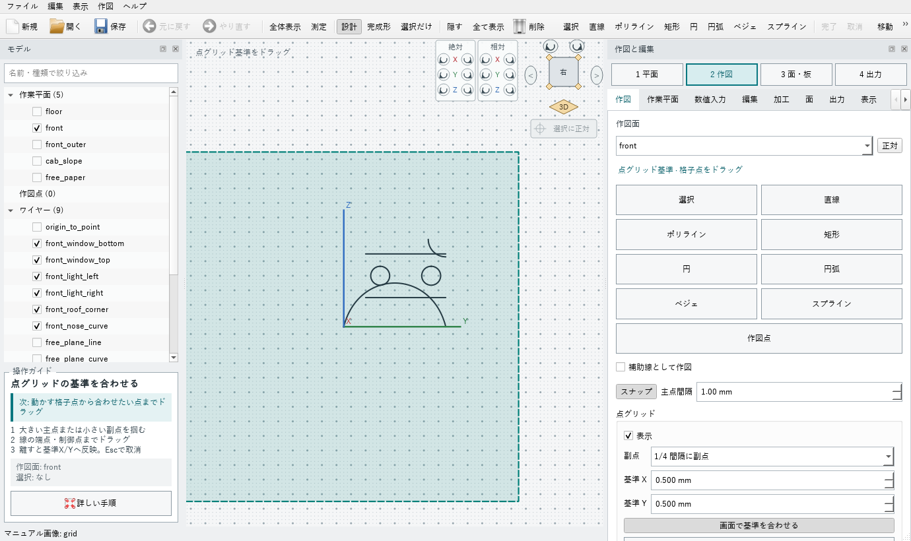
- 作図面
- 「作図」タブ最上部で平面を選び、「正対」。
- 表示
- 「点グリッド」の「表示」をオン。
- 主点間隔
- 「スナップ」行へ大きい点の間隔。例は
1.00 mm。 - 副点
- 主点のみ、1/2、1/3、1/4から選択。1/4なら候補間隔は主点間隔の4分の1です。
- 数値基準
- 基準X/Yへ点列の開始座標。中心を半ピッチずらすなら両方
0.5 mm。 - 吸着
- 「スナップ」をオン。カーソルに最も近い格子点へ常に吸着し、薄い丸が出ます。交点・端点などの構造点が近くにあればそちらを優先します。自由位置に置きたいときは Ctrl を押しながらクリック。
図形上の点へグリッドをドラッグして合わせる
- 「画面で基準を合わせる」を押します。
- 中央画面で、動かしたい大きい主点または小さい副点を左ボタンで掴みます。
- ボタンを押したまま、基準にしたいワイヤーの端点または制御点へ移動します。近づくとその点へ正確に吸着します。図形点がない場所へ自由に置くこともできます。
- 左ボタンを離します。点列全体が移動し、新しい値が基準X/Y欄へ入ります。
- やり直す場合はもう一度実行。途中で止める場合は Esc。原点へ戻す場合は「基準を 0, 0 に戻す」です。
基準値は作図面内のX/Yで、世界座標のXYZではありません。副点が画面上で密集しすぎる倍率では小点だけを一時的に省略します。主点は約4px以内、副点は画面上の点間隔に合わせた約0.75～2.25px以内だけ吸着するため、主点・副点の間にも自由に線を引けます。
6. 2D作図
最初に「作図面」を選ぶと自動で正対します。以後は中央の3D画面を紙として直接クリックします。
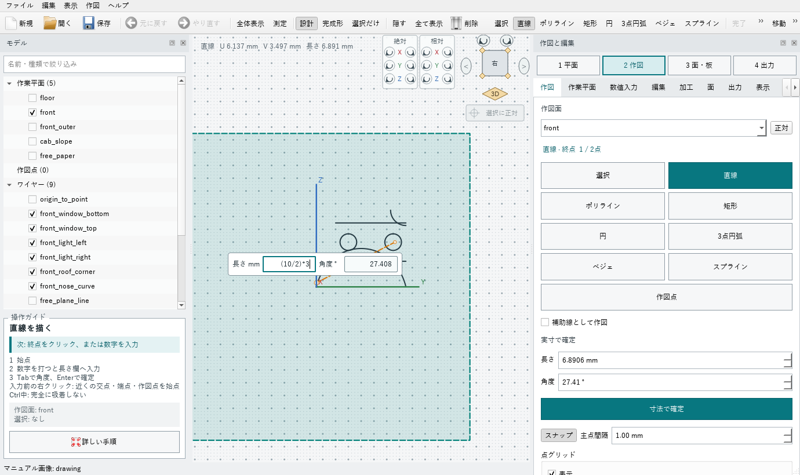
| 道具 | クリックする順番 | 確定 |
|---|---|---|
| 作図点 D | 残したい位置を1回クリック | 交点・端点・格子点または自由位置へ、後続作図の基準点を保存。 |
| 直線 L | 始点 → 終点 | 2点目で完成。始点後はカーソル横で長さ・角度を直接入力可。 |
| ポリライン P | 始点 → 折れ点を順番に | Enter、右クリック、または「完了」。 |
| 矩形 R | 対角の1点目 → 対角の2点目 | 2点目で完成。1点目後に幅・高さをカーソル横で入力可。 |
| 円 C | 中心 → 円周上の点 | 2点目で完成。中心後に半径をカーソル横で入力可。 |
| 円弧 A | 3点、両端＋半径、始点＋接線/法線方向から方式を選択 | 3点方式は3点目、ほかは必要点と数値を入れて「この円弧を作成」。 |
| ベジェ B | 始点 → 制御点1 → 制御点2 → 終点 | 4点目で完成。 |
| スプライン S | 通過点を4点以上 | Enter、右クリック、または「完了」。 |
交点・端点・作図点へ正確に合わせる
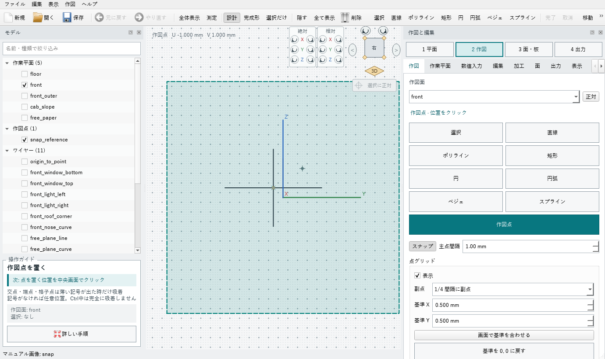
- 「スナップ」をオンにします。
- 交差する2本の線、既存端点、作図点、線の中点、円・円弧の中心の近くへカーソルを移します。通常は交点が約18px、作図点・端点が約16px、中点・中心が約14px以内で候補になります。
- 吸着すると候補を囲む大きな丸が表示され、その内側に種別の記号(交点=×、作図点=丸、端点=四角、中点=三角、中心=丸+中心点)が出ます。格子点は薄い小丸です。構造上の点と格子が同時に候補になる場合は、交点・作図点・端点 > 中点・中心 > 格子の順で優先します。
- 大きな丸が出ている間に左クリックすると、その候補の正確な座標を使います。構造点が近くにないときは最寄りの格子点へ常に吸着します(任意位置はCtrl)。
- 始点を置く前に右クリックすると、約20〜21px以内の交点・作図点・端点だけを広めに探して始点にします。格子点はこの右クリック探索へ含めません。
- 候補が近すぎて任意位置を選べない時は、Ctrlを押しながらクリックします。押している間だけ候補表示と吸着を完全に止めます。
右クリックは入力前なら近傍点から開始、入力後なら従来どおりポリライン・スプラインの完了または途中操作の取消です。「作図点」はワイヤーや面にはならない位置基準で、左の一覧から選択・非表示・削除でき、保存して開き直した後もスナップに使えます。
正確な長さ・角度で直線を引く
- 「直線」を選び、中央画面で始点だけをクリックします。マウスを動かすと、長さ・角度欄がカーソルのそばへ追従します。
- クリックせず、そのまま数字または
(を打ち始めます。入力は自動で長さ欄へ入り、例えば(180/2)*3は270 mmになります。 - Tabで角度欄へ移り、作図面の横を0°、縦を90°として角度を入力します。
- Enter。式を計算した実寸の終点で直線が完成します。
使用できる式は + - * / ( )、小数、指数表記、円周率 pi です。入力欄内でも Esc は1回で数値編集ごと作図全体を取り消し、選択解除まで戻ります。右パネルの実寸欄も同じ式に対応します。
ほかの形を実寸入力する
- 矩形
- 1点目後に幅を入力し、Tabで高さ、Enterで完成。
- 円
- 中心後に半径を入力し、Enterで完成。
- ポリライン
- 各区間の長さ・角度を入力して点を追加。右クリックまたは「完了」で全体を完成。
- 3点円弧・ベジェ
- 通過点または制御点までの距離・角度を順番に入力。
- スプライン
- 各通過点までの距離・角度を入力し、4点以上で右クリックまたは「完了」。
円弧を両端と半径で決める
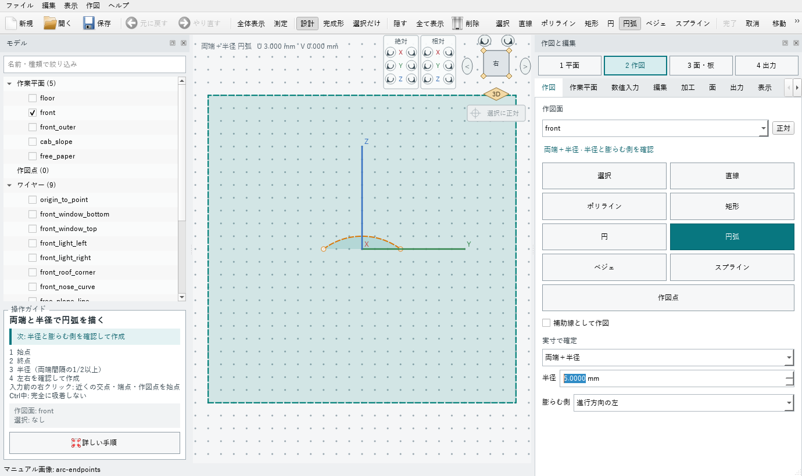
- 「円弧」を選び、方式を「両端＋半径」にします。
- 始点、終点の順に中央画面でクリックします。
- カーソルを動かすと半径と膨らむ側がライブで追従します(右パネルの半径欄にも反映)。ちょうど良い膨らみで3回目のクリックをすると確定します。
- 数値で決めたい場合は、半径欄へ数値または計算式(半径は両端距離の半分以上)を入力し、「左へ膨らむ / 右へ膨らむ」を選んで「この円弧を作成」。半径欄へ入力を始めるとドラッグより数値を優先します。
始点から方向を決めて円弧を生やす
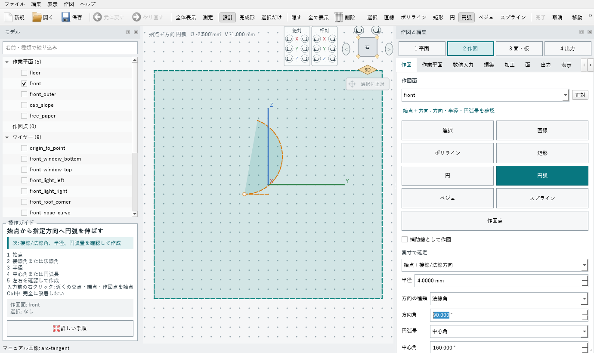
- 方式を「始点＋接線/法線方向」にし、円弧を生やす始点をクリックします。既存線上ならスナップ記号を確認して置きます。
- 角度基準を「接線角」または「法線角」にします。角度は作図面の横方向が0°、縦方向が90°です。
- 方向角と半径を入力し、円弧量を「中心角」または「円弧長」から選びます。
- 「左へ曲がる / 右へ曲がる」を選びます。法線角は選んだ曲がる側の円弧中心を向く方向です。
- 青い予告と始点の接線ガイドを確認して「この円弧を作成」。
中心角と円弧長を切り替えると、現在の半径を使って値を相互変換します。入力済みの値は 円弧長 = 半径 × 中心角(rad) の関係を保ちます。既存曲線へ滑らかに追従させ続けたい場合は、作成後に「接線接続」または「曲率接続」も設定します。
作図中の補助操作
- Shiftを押しながら直線・ポリライン: 水平または垂直へ固定。
- Shiftを押しながら矩形: 正方形へ固定。
- Ctrlを押しながらクリック: その点だけ完全にスナップを解除。Ctrl+Shiftなら吸着なしと水平・垂直/正方形拘束を併用。
- 入力前に右クリック: 近くの交点・作図点・端点を始点にする。
- 「補助線として作図」: スナップ・寸法基準には使うが、面や切断図へ入れない。
- 「指定した点を作図点として残す」: ベジェ・スプラインの確定時に、クリックした通過点・制御点を作図点(
線名_点N)としても作ります。 - Esc: どこにフォーカスがあっても1回で「入力破棄 → 選択道具 → 選択解除」まで戻ります。「取消」ボタンは入力中の点だけを破棄します。
- 作図道具の使用中は、作図面上にない線・点が自動で薄く表示されます(常時薄くしたい場合は表示タブの「作図面以外の線を常に薄く表示」)。
- ホイール・中ドラッグ・右ドラッグ: 作図中も拡大縮小・平行移動できます。
作図は作図面に正対していなくても行えます。斜めから見た3Dビューでも、クリックは「カーソルの視線と作図面の交点」に置かれ、スナップ・予告表示も同じ位置で働きます。正対して作図した場合と結果は同じです。
「作図」タブ内で「選択」に戻さず左クリックすると、現在の作図道具の点が追加されます。選びたいときは V を押してください。「面」「出力」など担当外のタブへ移ると、安全のため自動で選択モードへ戻ります。
7. 数値でワイヤーを作る
マウス作図ではなく、座標が決まっている線・円・曲線は「数値入力」タブで直接作れます。
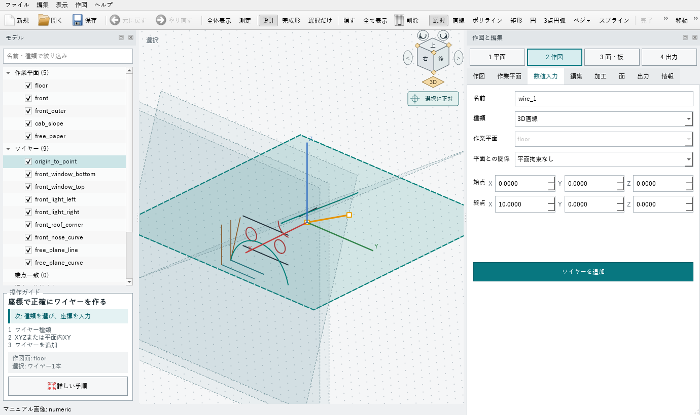
| 種類 | 入力 | 座標 |
|---|---|---|
| 3D直線 | 始点XYZ、終点XYZ | 世界座標。任意方向の線。 |
| 3Dベジェ曲線 | 始点、制御点1、制御点2、終点の各XYZ | 世界座標。原点と終点だけでなく膨らみを2制御点で決めます。 |
| 平面上の直線 | 始点XY、終点XY | 選択した作業平面内座標。 |
| 平面上の円 | 中心XY、半径 | 選択した作業平面内。 |
| 平面上の円弧 | 中心XY、半径、開始角、中心角 | 作業平面の横方向が0°。 |
| 平面上のベジェ曲線 | 始点、制御点1、制御点2、終点の各XY | 選択した作業平面内。 |
原点から (2, 4, 7) へ直線を作る
- 種類
- 「3D直線」
- 始点
- X=0、Y=0、Z=0
- 終点
- X=2、Y=4、Z=7
- 関係
- 「平面拘束なし」
- 実行
- 名前を付けて「ワイヤーを追加」。
ワイヤーと作業平面の関係
| 設定 | 意味 |
|---|---|
| 平面拘束なし | 完全な3Dワイヤー。作業平面を変えても追従しません。 |
| 作業平面を編集基準に使用 | 平面を座標・角度編集の基準にしますが、ワイヤー自体を平面へ閉じ込めません。 |
| 作業平面に固定 | ワイヤーを平面上に保ちます。平面を動かすとワイヤーも追従します。 |
8. 編集・拘束
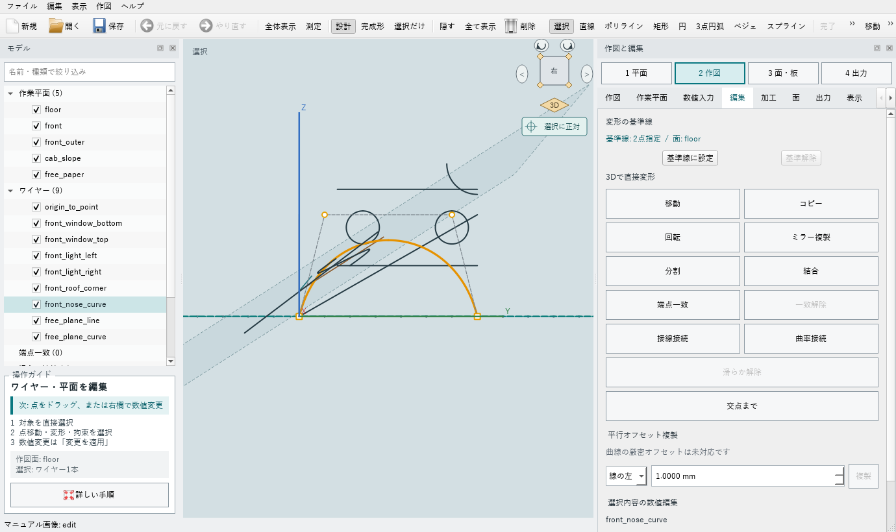
点・制御点をマウスで動かす
- Vで「選択」にします。
- ワイヤーをクリックして制御点を表示します。
- 動かす点を左ドラッグします。作業平面に固定されたワイヤーは、その平面上で動きます。
- 誤った場合は Ctrl+Z。
座標・半径・平面を数値編集
- 選ぶ
- ワイヤーまたは作業平面を1個。
- 開く
- 「編集」タブを下へスクロールし「選択内容の数値編集」。
- 入力
- ワイヤーは点のXYZまたは円弧の中心・軸・半径・角度。平面は原点・法線・平面内X。
- 実行
- 「変更を適用」。
直線の長さ・角度を保持
- 直線を1本選びます。
- 「直線の寸法を保持」で長さまたは平面内角度の「固定」をオンにします。
- 値を入力します。水平は「水平 0°」、垂直は「垂直 90°」でも指定できます。
- 「変更を適用」。以後、端点を動かしても固定値が維持されます。
直接変形
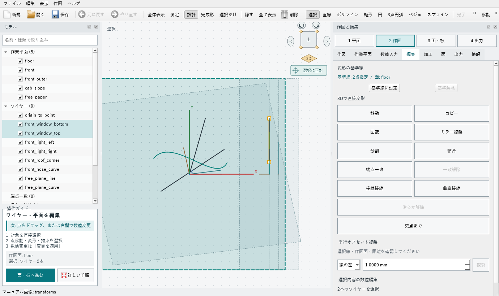
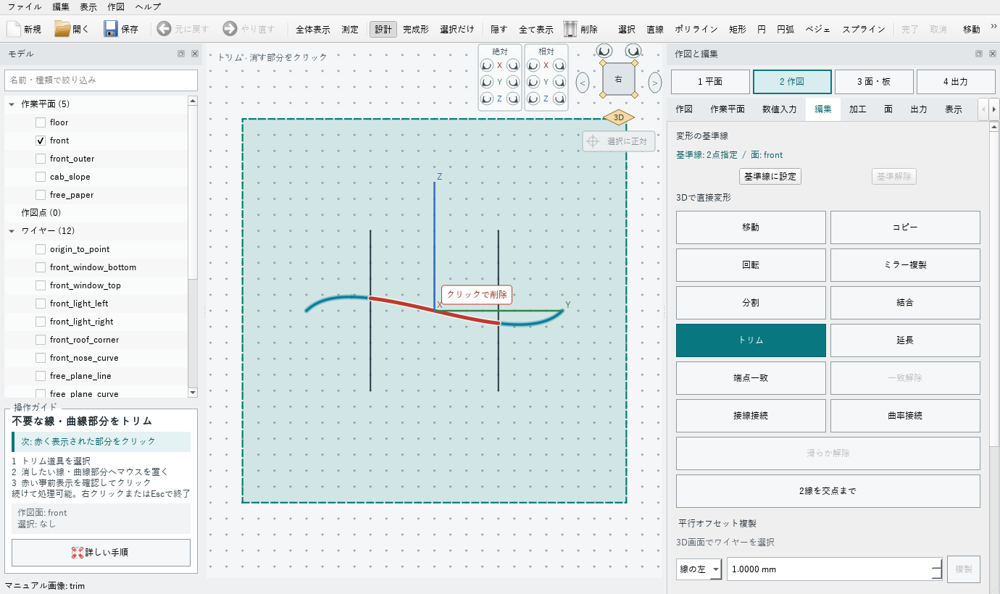
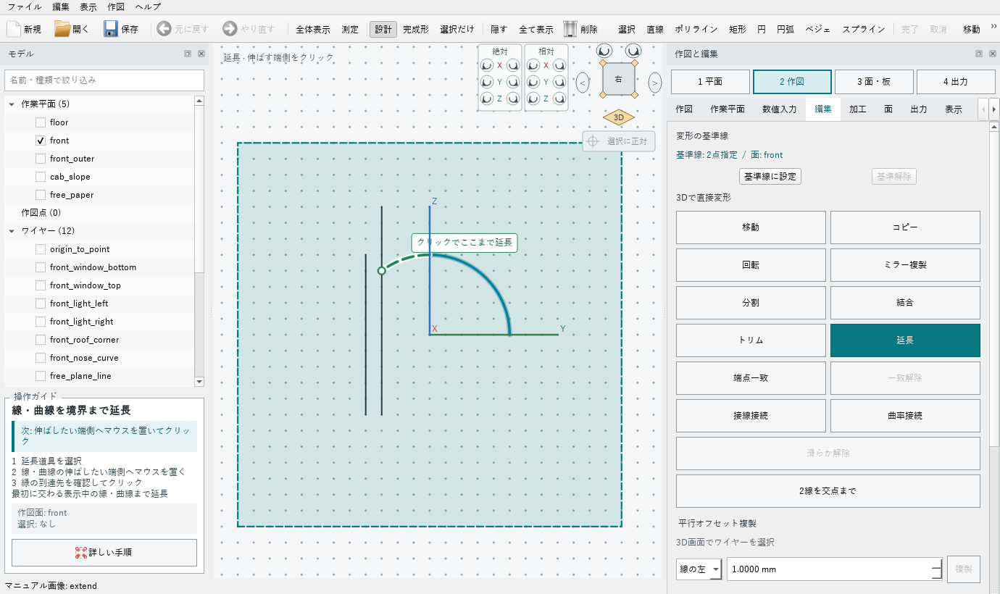
| 機能 | 事前選択 | 中央画面で指定する順番 |
|---|---|---|
| 移動 | ワイヤー1本以上 | 移動元の基準点 → 移動先。 |
| コピー | ワイヤー1本以上 | 複製元の基準点 → 複製先。 |
| 回転 | ワイヤー1本以上 | 回転中心 → 角度0°の基準点 → 回転先。 |
| ミラー複製 | ワイヤー1本以上 | ミラー軸の1点目 → 2点目。基準線を設定済みならその線を軸として明示できます。 |
| 分割 | ワイヤー1本 | そのワイヤー上の分割位置。 |
| トリム X | なし | 消したい線・曲線部分へマウスを置く → 赤い区間を確認 → クリック。 |
| 延長 E | なし | 伸ばしたい線・曲線の端側へマウスを置く → 緑の到達先を確認 → クリック。 |
| 端点一致 I | なし | 固定側の端点 → 追従側の端点。 |
| 接線接続 T | なし | 固定側の端点 → 追従するベジェ・スプライン・円弧の端点。 |
| 曲率接続 Shift+T | なし | 固定側の端点 → 追従するベジェの端点。 |
トリム・延長を続けて使う
- 編集タブで「トリム」または「延長」を選びます。事前選択は不要です。
- 中央画面で対象の線・曲線へマウスを置きます。トリムは消える区間が赤、延長は増える区間が緑になります。
- 予告が正しければ左クリックします。道具は終了しないため、別のワイヤーも続けて処理できます。
- 終了は右クリックまたは Esc。間違えた操作は1回ごとに Ctrl+Z で戻せます。
境界には、現在の3D画面に表示されている線・曲線を使い、画面上の見かけではなく実際の3D位置で交差を求めます。トリムで2交点の間を指すと中央区間だけが消えて2本へ分かれ、端側を指すと最寄り交点まで短くなります。延長は指した側の先で最初に交わる有限ワイヤーまで伸びます。
直線、開いたポリライン、円弧、ベジェ、B-splineを元の種類と精度を保って処理します。円は2交点でトリムして円弧にできます。円そのものの延長と、閉じたポリラインの直接トリムはできません。投影線・板厚位置線は派生元の平面図を編集します。
複数線をまとめて処理
- 結合: 端点がつながる直線・ポリラインを順番に複数選択し「結合」。
- 2線を交点まで: 交わる、または延長すれば交わる直線を2本選び「2線を交点まで」。両方を同じ交点へトリムまたは延長します。
- 一致解除: 関係のあるワイヤーを選び「一致解除」。付随する滑らか接続も解除します。
- 滑らか解除: ワイヤーを選び「滑らか解除」。端点一致は残し、G1/G2だけ解除します。
平行オフセット複製
- 選ぶ
- 同一作図面にあるワイヤーを1本以上。
- 設定
- 「線の左 / 線の右」と距離。左右は始点から終点を見た向きです。
- 確認
- 紫色のプレビュー。
- 実行
- 「複製」。
ベジェ・B-splineの厳密な等距離オフセットは未対応です。曲線は必要に応じて複製後に制御点を調整してください。
9. 測定
上部の「測定」または M で開始し、右の「情報」タブに結果を表示します。形状は変更しません。
2点間（3D距離）
- モード
- 情報タブで「2点間（3D距離）」。
- 指定
- 中央画面で1点目 → 2点目。保存済み作図点、ワイヤー端点、曲線上の任意位置を直接クリックできます。
- 結果
- 3D距離、X/Y/Z差、XY/YZ/ZX投影距離、各軸との角度。
- 残す
- 候補値と寸法名を選び「寸法を残す」。
保存済み作図点とワイヤー上の点は、その点が作図面外でも正確な3D座標を使います。何もない画面位置には奥行きが1つに決まらないため、現在の作図面上の点として指定します。
3点角度（3D）
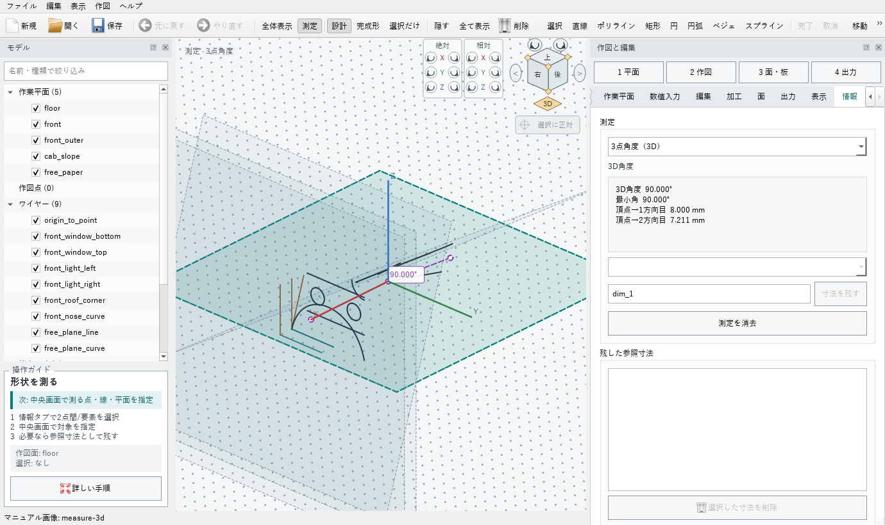
- モードを「3点角度（3D）」にします。
- 角度の頂点を最初にクリックします。
- 1本目の向きを示す点、2本目の向きを示す点の順にクリックします。
- 3D角度、最小交角、2本の腕の長さを確認します。作図面へ投影せずXYZ座標から計算します。
要素（接線・法線）
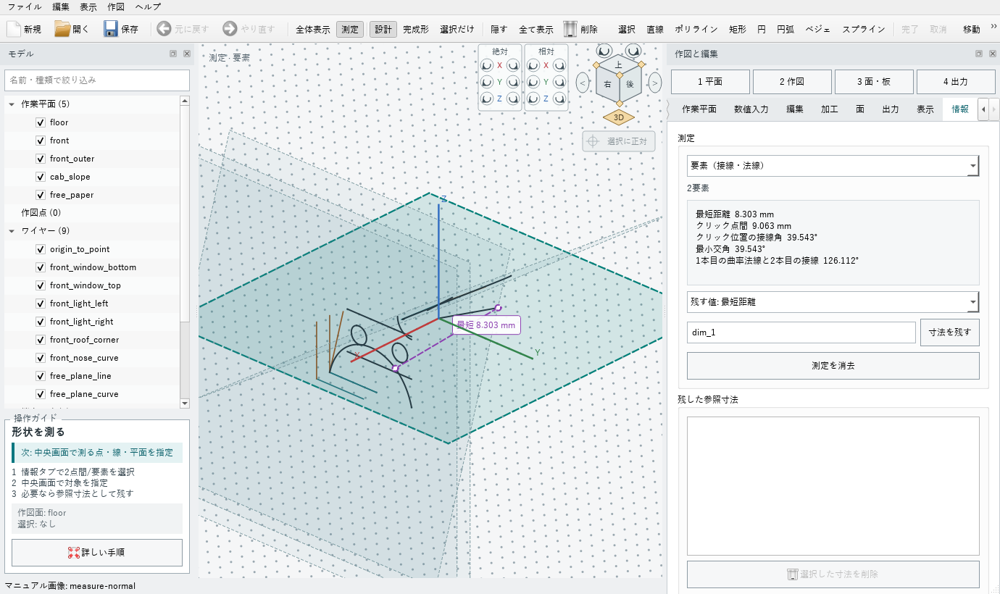
| 選ぶもの | 表示される主な値 |
|---|---|
| ワイヤー1本 | 全長、円・円弧なら半径、クリック位置の接線とX/Y/Z軸の角度。曲線なら曲率法線と各軸の角度。 |
| ワイヤー2本 | 最短距離、クリック位置同士の接線角。両方が曲線なら法線同士、片方が直線なら曲線法線と相手接線の角度。 |
| 点 + ワイヤー | 点からワイヤーまでの最短距離。 |
| ワイヤー + 平面 | 線または接線と平面の角度。 |
| 点 + 平面 | 点から平面までの距離。 |
| 平面2枚 | 平面同士の角度、条件により平面間距離。 |
円・円弧の曲率法線は中心を向く半径方向、ベジェ・B-splineはその位置の曲がる内側です。直線には一意な曲率法線がないため「なし」と表示します。結果が複数あるときは保存する値をプルダウンで選び、名前を付けて「寸法を残す」。左一覧の「参照寸法」と情報タブの一覧から表示切替・削除ができます。「測定を消去」は一時測定だけを消します。
10. 交差線のC面取り・R丸め
面取りツール（推奨: ペアを次々クリック）
- ツール列の「C面取り」または「R面取り」ボタンを押します。
- 中央画面で、面取りしたい直線のペアを1本ずつ次々クリックします（1本目は太くハイライト、ペアが完成するとプレビューの破線が出ます）。複数のペアを続けて選べます。
- 「加工」の切戻し距離（Cの場合）または半径（Rの場合）を入力すると、全ペアのプレビューが追従します。
- Enter または「作成」ボタンで全ペアへ一括適用します。適用後も道具は続くので、続けて次のペアを選べます。
2本が離れていても、延長線上の交点まで自動で延長してから面取りします（AutoCADのFILLETと同じ流儀）。残す側はクリックした位置で決まります: 線上のクリックした側が残ります。ペアを選び直すときはEsc（1本目の取消は右クリック）。
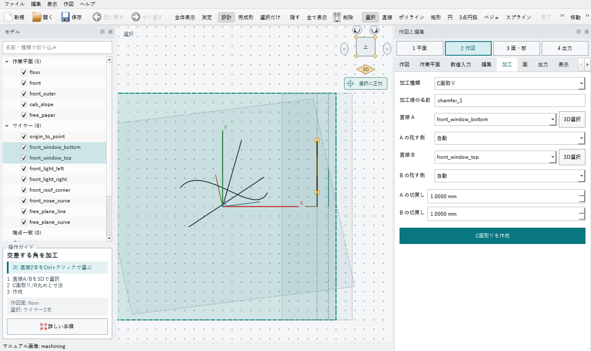
従来方式（選択済みの2直線へ1組だけ）
- 「加工」タブで加工種類を「C面取り」または「R丸め」にします。
- 直線A/B横の「3D選択」→ 中央でそれぞれをクリック。
- 各線の「残す側」を自動・始点側・終点側から選びます。
- 切戻し距離（C）または半径（R）を入力し、「作成」。
11. ワイヤーから面を作る
面は厚みを持たない設計面です。断面を並べて立体の外形を作り、後から板厚や治具へ展開します。
作り方は通常「自動（選択から判定・推奨）」のままで構いません。選択内容から、閉じる輪郭→平面、断面2→曲面、断面3以上→ロフト、他の線の端点が2本以上載る線が2本あればそれを外形ガイドにしたガイド付き面、と判定します。判定結果は選択のたびに面・板材タブのラベルへ表示され、作られる面が半透明のプレビューで中央画面に出ます。プレビューが出ない選択は、その理由もラベルに表示されます。判定を上書きしたいときだけ作り方を手動で選んでください。
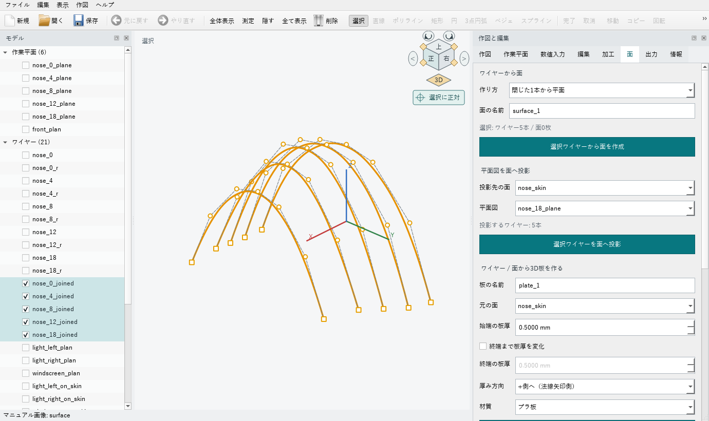
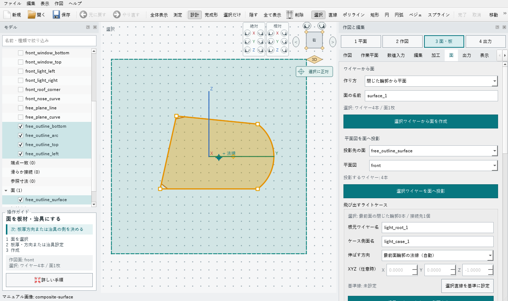
| 作り方 | 必要な選択 | 作られる面 |
|---|---|---|
| 閉じた輪郭から平面 | 閉じたワイヤー1本、または端点同士で閉じる複数の直線・曲線 | 自由輪郭の内側を埋める平面。 |
| 2断面から曲面 | 断面2つ。各断面は1本または端点接続した複数線 | 2断面を結ぶ曲面。 |
| 3断面以上からロフト | 前から後ろなど順番に3断面以上。各断面は複数線に対応 | 表の順で全断面を通る曲面。 |
| 外形ガイド2本＋断面1本以上 | 外形2つと断面1つ以上。外形・断面とも複数線に対応 | 両外形と全断面を通るガイド付き曲面。直交平面上の外形を持つ前面上部に使います。 |
| 押し出し面（ツール「押出・回転」） | ワイヤー1本 + 方向と距離 | ワイヤーを平行移動した写しとの間に張る面。反対側の縁ワイヤーも作られます。 |
| 回転面（ツール「押出・回転」） | 断面ワイヤー1本 + X/Y/Z軸と角度。軸を通す作図点は任意 | 断面を軸まわりに回した回転体（ろくろ形状）。断面数で滑らかさを調整。 |
| オフセット面（ツール「押出・回転」） | 面1つ + ずらす量 | 法線方向へずらした近似面（断面ロフト）。内張り・裏打ちの土台に。 |
- 作り方
- 通常は「自動」のまま。必要な場合のみ「閉じた輪郭」「2断面」「ロフト」「外形ガイド付き」から選びます。
- 連続区間を選ぶ
- 1つの輪郭・外形・断面に含める線を1本だけ3Dで選び、「接続区間を一括選択」を押します。直線、円弧、ベジェ、B-splineが混在していても端点接続をたどります。分岐点では止まるため、交差する別の外形や断面は混ざりません。
- 1行を登録
- 「輪郭を追加」「外形を追加」「断面を追加」の該当ボタンを押します。表の1行が1つの論理的な線になります。登録後は3D選択が自動解除されます。
- 線分を足す
- 未完成の行をクリックすると登録済み線が再選択されます。Ctrl+クリックで次の線を加え、「選択行へ線を追加」。閉輪郭は最後の線を足すまで開いたまま登録できます。
- 状態を確認
- 表の「状態」が、平面輪郭なら「閉ループ」、外形や断面なら「開経路」になっていることを確認します。「接続エラー」は隙間、重複、枝分かれ、離れた区間の混在を示します。
- 次を登録
- 次の外形・断面を同じ手順で新しい行へ追加します。上下矢印で断面順を直せます。
- 構成線
- 「構成線をワイヤにする」をチェックすると、各断面位置の面上の線（
面名_構成線N）を独立ワイヤとしても作ります。複数線をつないだ断面も1本の連続線になり、工作の基準線・カット線に使えます。 - 実行
- 面名を入力し、「表の輪郭・断面から面を作成」。
- 結果
- 左一覧の「面」に追加。元線は独立したまま残り、編集すると面も再計算されます。
各輪郭・外形・断面が最初から1本のワイヤーなら、従来どおり3Dで必要本数を順に選んで直接作成する簡易操作も使えます。複数線を含む場合は、選択順を記憶する必要がない表を使用してください。
ガイド付きでは各断面の両端を外形ガイドへ合わせます。断面はガイドの端だけでなく途中へ接続できます。また、2本の外形ガイド同士が前後両端でつながり、全体として閉じた外周になる構成も使用できます。ただし表では2本の外形を別々の行へ登録してください。「接続区間を一括選択」は外形同士と断面が集まる分岐点で止まるため、片側の外形だけを登録できます。大きなスナップ丸が出ている位置で端点を置くと確実です。作図時の微小な端点差は0.02 mmまで面生成時に接続として扱いますが、元線の座標は変更しません。断面の向きと並び、2本目ガイドの向きは自動でそろいます。ガイドから0.05 mm以上離れた断面は、誤った面を作らず接続不足として拒否します。
別々に描いた線・曲線から自由形状の平面を作る
- 直線、円弧、ベジェ、スプラインを組み合わせ、各端点が一周して元へ戻る輪郭を描きます。
- 「選択」で輪郭を構成する線をすべて Ctrl+クリックします。選ぶ順番と各線の向きは問いません。
- 「面」タブで作り方を「閉じた輪郭から平面」にし、「選択ワイヤーから面を作成」を押します。
- 元の線は残ります。後で制御点を動かすと、端点接続と同一平面を保てる範囲で面も追従します。
面ができない場合は表の赤い「接続エラー」の行を選びます。端点間の隙間が0.02 mmを超えていないか、離れた線が同じ行にないか、同じ線を重ねていないか、全線が同じ作図面上にあるかを確認します。曲線は面生成時だけ0.01 mm以下の輪郭誤差で内部変換され、元の曲線は失われません。
面がねじれる場合は表の上下矢印で断面順を直してください。行内の線は端点で一続きになる必要があります。枝分かれ、同じ線の重複、自己交差した閉輪郭は誤った面を作らず、理由を表示して拒否します。補助線は面の断面に使われません。
12. 面・ワイヤーから3D板を作る
板は面へ厚みを与えた通常の3Dモデルです。一定板厚だけでなく、始端から終端へ連続的に板厚を変えられます。
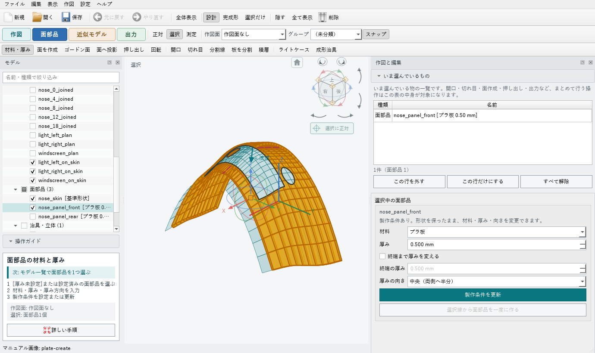
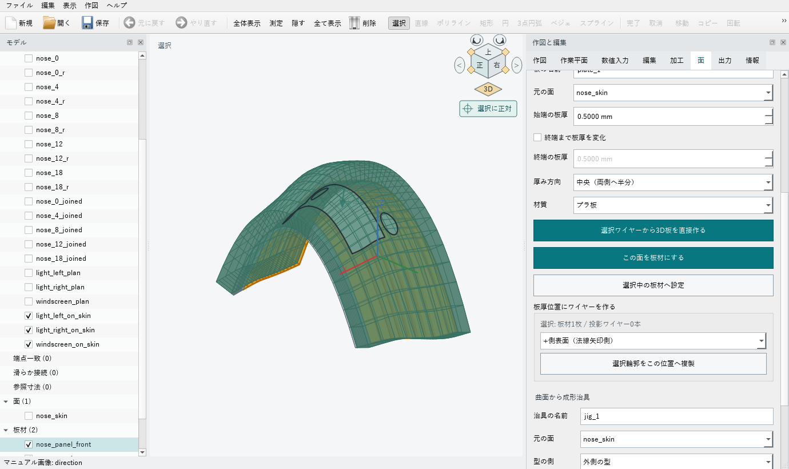
いったん面を作ってから板にする
- 選ぶ
- 元にする面を1枚。
- 設定
- 「面」タブの板名、元の面、始端板厚、厚み方向、材質。
- 可変板厚
- 必要なら「終端まで板厚を変化」をオンにし、終端板厚を入力。
- 厚みの追加出力
- 「厚み位置の面も作る（反対側表面）」で厚みぶんずらした面を、「縁ワイヤも厚み位置へ複製」で輪郭・断面の複製を、板材と同時に作れます。複数チェックで全部まとめて出力されます。
- 実行
- 「この面を板材にする」。
- 結果
- 左一覧の「板材」に追加され、閉じた3D形状になります。
- 作れない場合
- 面内部の潰れ、法線を決められない領域、板厚による表裏の折り返しを作成前に検査し、修正方法を警告します。元の面は消えません。外周端だけが一点へ収束する面は板材化できます。
任意ワイヤーから直接3D板を作る
| 選択 | 結果 |
|---|---|
| 閉じたワイヤー1本 | 輪郭内の平板。 |
| 断面ワイヤー2本 | 2断面を結ぶ曲面板。 |
| 断面ワイヤー3本以上 | 選択順に全断面を通るロフト板。 |
| 外形ガイド2本＋断面1本以上 | 面の作り方を同名モードにしてから直接作成すると、ガイド付き面と板を一括生成。 |
- 断面を前から後ろへ Ctrl+クリックします。
- 板名、板厚、厚み方向、材質を指定します。
- 「選択ワイヤーから3D板を直接作る」。内部で設計面も作られ、後から板設定を変更できます。
板厚方向
| 設定 | 元の面に対する板の位置 |
|---|---|
| +側へ（法線矢印側） | 元の面を内側境界として、矢印側へ全板厚。 |
| 中央（両側へ半分） | 元の面を板厚中央として両側へ半分ずつ。 |
| -側へ（矢印と反対） | 元の面を外側境界として、矢印と反対へ全板厚。 |
既存板を変更するには板を1枚選び、値を変えて「選択中の板材へ設定」。新しい板を作り直す必要はありません。
板厚相当位置へワイヤーを作る
- 板材1枚と、その元面へ投影された輪郭を1本以上選びます。
- 「板厚位置にワイヤーを作る」で「+側表面」「板厚の中央」「-側表面」を選びます。
- 「選択輪郭をこの位置へ複製」。板厚を変えると派生ワイヤーも追従します。
薄板を重ねて積層する（段差の表現・補強）
- 選ぶ
- 土台になる板材を1枚。
- 開く
- ツール「積層」（板材を重ねて積層）。
- 設定
- 1層の板厚と追加する層数。目標高さを入れると必要層数を提案します。
- 実行
- 「選択中の板材の上に積層を追加」。層は「土台_L2」「_L3」…の名前で、下の板の外側へ自動でずれて重なります。
- 追従
- 下の板の厚みを変えると上の層の位置も追従します。型紙名にも積層記号（[積層L2 → 土台 の上]）が付きます。
全ての層を自分で別の面に描いた場合は、2枚の板を選んで「選択2枚を積層関係に」（先に選んだ板が下）で関係だけを記録できます。
13. 平面図を曲面へ投影し、窓・ライト穴を開ける
窓やライトなどの開口輪郭は正面図などの平らな紙で正確に描き、それを完成形の曲面へ投影してから板の開口にします。
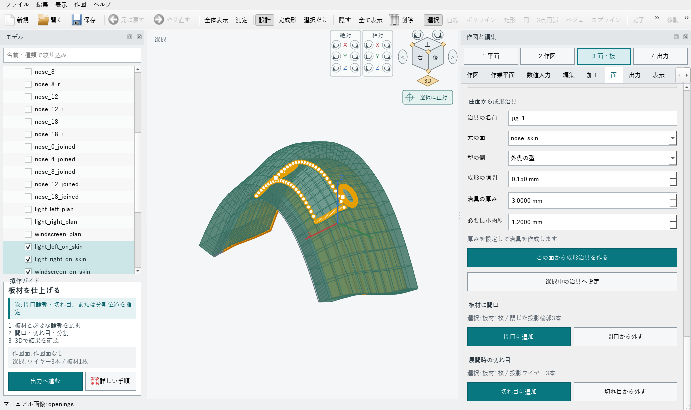
1. 平面図を用意する
- 窓・ライトを見たい向きの作業平面を作るか選びます。
- 「作図」タブでその平面へ正対します。
- 矩形、円、ベジェ等で閉じた輪郭を描きます。1つの穴につき閉じた1輪郭です。
2. 面へ投影する
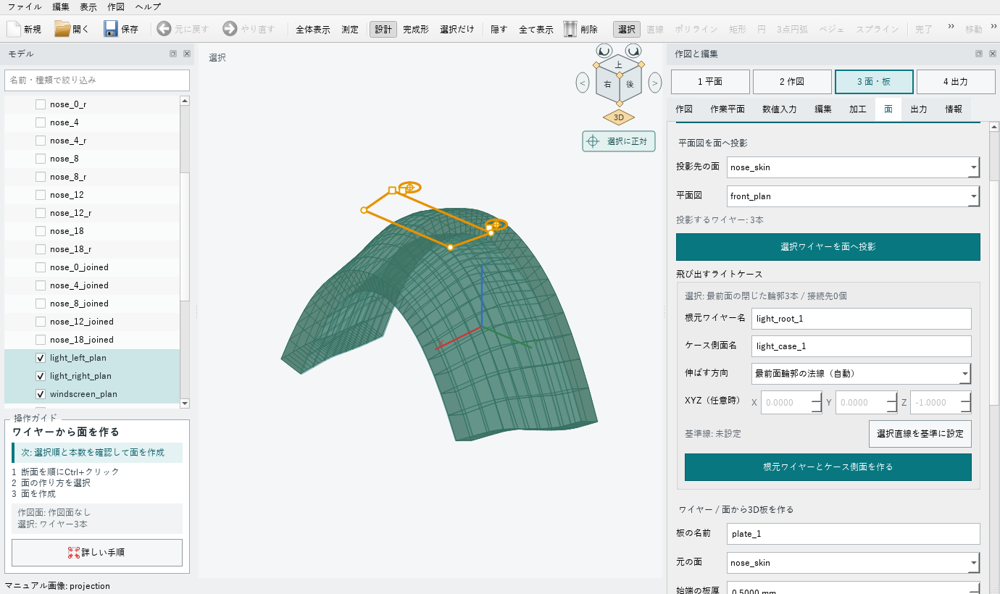
- 選ぶ
- 投影する平面図ワイヤーを1本以上。面そのものは選択不要です。
- 開く
- 「面」タブの「平面図を面へ投影」。
- 設定
- 「投影先の面」と、輪郭を描いた「平面図」。
- 実行
- 「選択ワイヤーを面へ投影」。
- 結果
- 曲面に沿う新しい投影ワイヤーが左一覧へ追加されます。
2-2. 複数の面へ回り込み投影（パノラミックウインドウ）
115系・キハ65のように角をまたいで正面と側面へ回り込む窓は、1つの下書きを複数の面へ分割投影します。
- 下書きの閉じた輪郭と、投影先の面2枚以上を3D画面で一緒に選択します。
- 「平面図」で下書きを描いた作業平面を選びます。
- 必要なら「閉じた輪郭は面ごとの開口として登録」をチェックしたまま、「複数の面へ回り込み投影」。
下書きは「各面に実際に載る区間」ごとに分割され、隣の面との境目で閉じ直した面ごとの輪郭が各面へ投影されます。実物と同じく、角で2枚の板それぞれに窓が開きます。分割された下書き片（元名_面名分、非表示）が投影の派生元として残り、面や下書き片を編集すると投影も追従します。どの面にも載らない区間は飛ばし、その旨を報告します。
3. 板へ開口を登録する
- 選ぶ
- 穴を開ける板材1枚 + 閉じた投影輪郭1本以上。Ctrl+クリックで同時選択。
- 確認
- 「板材に開口」の表示が「板材1枚 / 閉じた投影輪郭N本」になる。
- 実行
- 「開口に追加」。
- 結果
- 板の表示とSTL/STEPから輪郭内が切り抜かれます。
- 解除
- 同じ板と輪郭を選び「開口から外す」。
輪郭全体が1枚の板の範囲内に必要です。窓をまたぐ位置で板が分割されている場合、先に継ぎ目を窓の外へ移すか、各板用の閉じた輪郭に分けてください。
3b. 面の段階で開口を登録する
- 選ぶ
- 面1つ + 閉じた投影輪郭1本以上。
- 実行
- 「板材に開口」区画の「面の開口に追加」。
- 結果
- 板材を作る前でも開口を確定できます。面に登録した開口は、面入力の部材近似モデル・型紙・実体化に反映され、後からこの面で作る板材へも自動で引き継がれます。
- 解除
- 同じ面と輪郭を選び「面の開口から外す」。
4. 展開図へ手動の切れ目を入れる
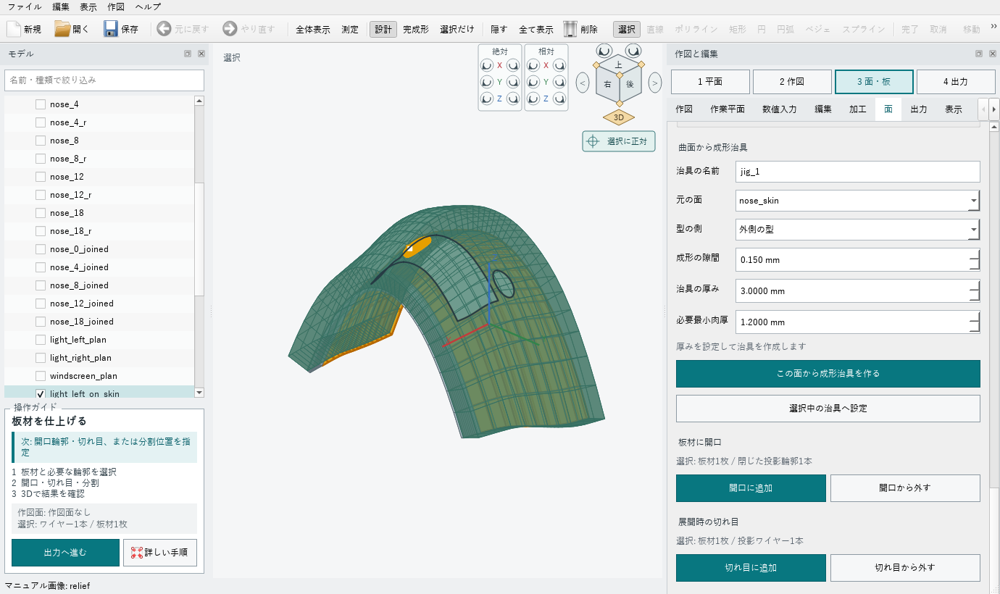
- 開口と同じ手順で、切れ目の線を平面図に描いて板の元面へ投影します。線は閉じる必要がありません。
- 板材1枚と投影後の切れ目ワイヤーを Ctrl+クリックします。
- 「面」タブの「展開時の切れ目」で「切れ目に追加」。解除は同じ2要素を選び「切れ目から外す」です。
切れ目は元の3D板を勝手に分割しません。展開SVG/DXF/PDFの切断線と、後述の展開3D板の細いスロットへ反映されます。投影元の線を編集すると切れ目も追従します。
5. 任意の線で展開片を分ける
- 分けたい位置を平面図へ描き、板の元面へ投影します。直線だけでなく、折れ線や曲線も使えます。
- 板材1枚と投影後のワイヤーを Ctrl+クリックします。
- 「面」タブの「展開片の分割線」で「分割線にする」を押します。解除するときは同じ2要素を選んで「分割線を解除」です。
- 「出力」タブで展開片数が変わったことを確認します。
分割線は途中切れ目と異なり、展開計算の接続を実際に切り、別々の閉じた外周を持つ紙片にします。投影元を編集すれば分割位置も追従します。元の組立3D板は分解されません。
14. 本体から飛び出すライトケースを作る
本体から突き出すライトケースは、最前面の閉じた輪郭を指定方向へ本体面まで伸ばし、根元輪郭とケース側面を一度に作ります。正面向きだけでなく斜めのケースにも使えます。
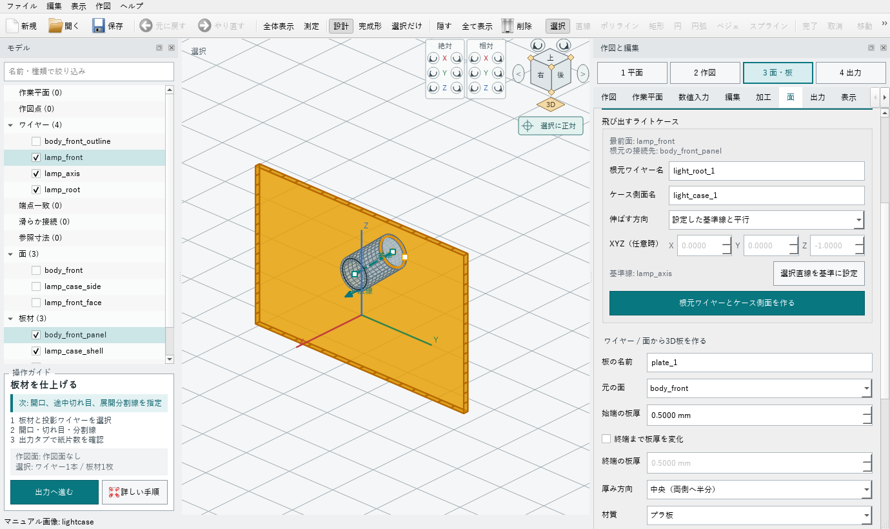
最前面輪郭と接続先を選ぶ
- ライトレンズ最前面の位置・角度に作業平面を置き、円などの閉じた通常ワイヤーを描きます。
- Vで選択へ戻り、最前面輪郭をクリックします。
- Ctrlを押しながら、根元を置く本体の「面」または「板材」をクリックします。
- 「面」タブの「飛び出すライトケース」に、最前面名と接続先名が表示されたことを確認します。
伸ばす方向を決める
| 設定 | 使い方 |
|---|---|
| 最前面輪郭の法線（自動） | ライト面に直角なケース。通常の正面向きライトはこれだけで作れます。 |
| 設定した基準線と平行 | 斜めケース。先に軸を表す直線を1本選び、「選択直線を基準に設定」を押します。その後、最前面輪郭と接続先を選び直します。 |
| 任意方向 XYZ | 既知の方向を数値指定します。例 X=1, Y=0.2, Z=0.1 はX方向へ進みながらY/Zにも傾く軸です。 |
- 名前
- 根元ワイヤー名とケース側面名を入力。
- 実行
- 「根元ワイヤーとケース側面を作る」。
- 結果1
- 接続先の面に沿う閉じた根元ワイヤーが追加されます。
- 結果2
- 最前面と根元を結ぶケース側面が「面」に追加されます。
- 板厚
- できたケース側面を選び、同じ「面」タブの「この面を板材にする」で外殻に厚みを付けます。
最前面輪郭または本体の元断面を後から編集すると、根元ワイヤーとケース側面も追従して再計算されます。接続先に板材を選んだ場合は、その板の元になった設計面へ接続します。
「投影線が面と交差しない」と表示された場合は、方向が接続先の面と平行になっていないか、投影先の範囲から外れていないかを確認してください。同梱の panorama-light-case.kcd で完成例を確認できます。
15. 曲面から成形治具を作る
プラ板を曲面へ押し当てて成形するため、設計面から外型または内型の3D治具を作ります。
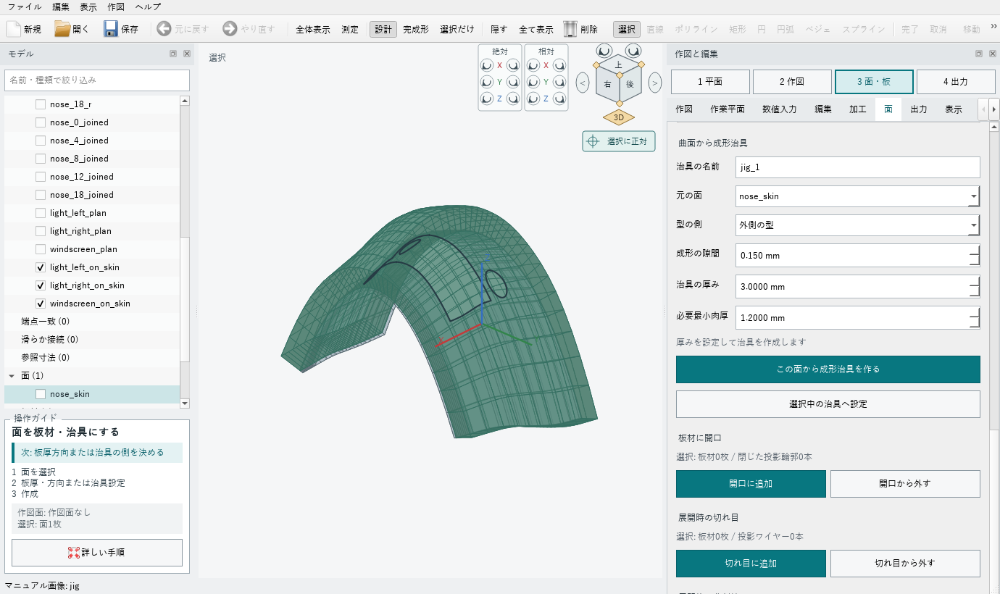
- 元の面
- 治具へ写す曲面。面を選択すると候補が同期します。
- 型の側
- 板を外側から押さえる形なら「外側の型」、内側から支える形なら「内側の型」。
- 成形の隙間
- 材料厚や取り外しを考慮したクリアランス。例
0.15 mm。 - 治具の厚み
- 3Dプリントする型本体の厚み。
- 必要最小肉厚
- 薄すぎる箇所を避ける基準。
- 実行
- 「この面から成形治具を作る」。
既存治具を選んで値を変更し「選択中の治具へ設定」で更新できます。治具は板材と同じく任意選択でSTL/STEPへ出力できます。
16. 板材を必要な位置で2分割する
CADが勝手に多数の小片へ分けることはありません。選んだ板を、確認した位置で1回につき2部品へ分けます。
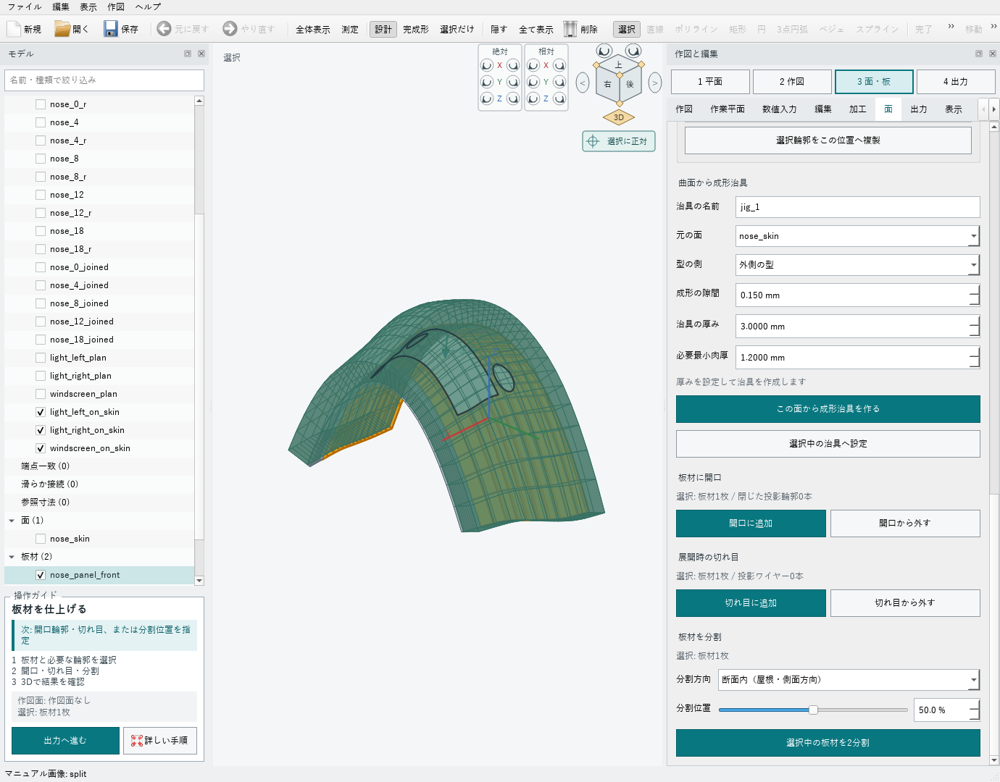
- 選ぶ
- 分割する板材を1枚。
- 方向
- 「断面に沿う方向（周方向）」または「長手方向（通し方向）」。
- 位置
- スライダーまたは1～99%の数値。赤い破線を中央画面で確認。
- 実行
- 「選択中の板材を2分割」。
- 結果
- 元板が2枚の板へ置き換わり、可変板厚なら分割位置の厚みを両方が引き継ぎます。
分割線が窓やライト穴を横切る場合、各部品側の半円・窓形の欠き取りへ自動変換されます。出力図では隣り合う部品を部品番号順に合わせると、元の開口輪郭へ戻ります。
16-2. 部材近似モデル（近似モデルモード）
完成品の面・板材を「1部材=基本1軸曲げ」の帯へ近似し直し、部材ごとの型紙・曲げ確認・板材化を行います。プラ板や紙で作れる形に落とすための中間モデルです。
作成
- 近似元
- 板材または面を選べます。面は厚み未定のまま近似し、板材化の時点で「面入力の板厚」を指定します。
- 分割
- 許容偏差から自動、または手動境界（0～1）。3D画面でワイヤーを選んで「選択ワイヤーを境界に使う」を押すと、任意の線の位置を境界＝折り線にできます。
- 実行
- 「部材近似モデルを作成」。境界レール・部材面が「近似:名前」グループに作られます。
曲げ確認（常に正しい形状）
- 「曲げ確認と出力」の「3Dビューで曲げ状態を表示」をオンにします。
- スライダーは組立アニメーションです。0%=各部材の展開形（型紙と同じ）が少し離れた位置に並び、100%で折り線ごとの角度どおりに折った状態（近似モデルの位置）へ収束します。
- 折り角そのものは折り線ごとの行で角度（°）⇄進行度（%）を相互に編集して指定します。折り状態は保存され、開き直しても続きから曲げられます。
- 一覧で部材を選ぶとその部材だけ表示されます（複数選択なら複数、未選択なら全部）。各部材の形と辺の間隔は常に正確です。
開口・出力
- 元の板材・面に登録した開口（窓・ライト）は、部材内に収まるものが実際の穴として近似・型紙・実体化へ写ります。
- 「この曲げ状態を板材化」は同じファイル内の「近似:名前」配下へ、「別の.kcdへ保存」「STL/STEP保存」は外部へ出力します。0%は型紙の平面配置（開口も実穴）です。
17. 1:1図面・展開図・3Dモデルを出力する
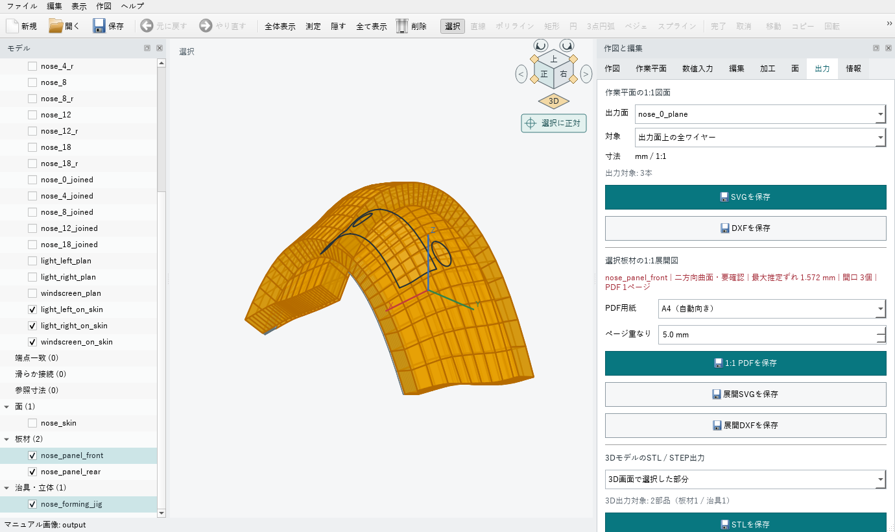
作業平面の1:1 SVG / DXF
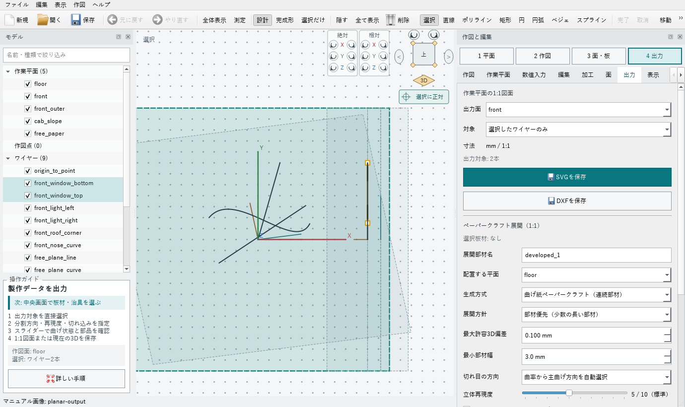
- 設定
- 「出力」タブで出力面を選び、「出力面上の全ワイヤー」または「選択したワイヤーのみ」。
- 実行
- 「SVGを保存」または「DXFを保存」。
- 用途
- 平らなプラ板・紙への印刷、レーザー加工、他2D CADへの受け渡し。単位mm、1:1です。
ペーパークラフト展開（1:1）
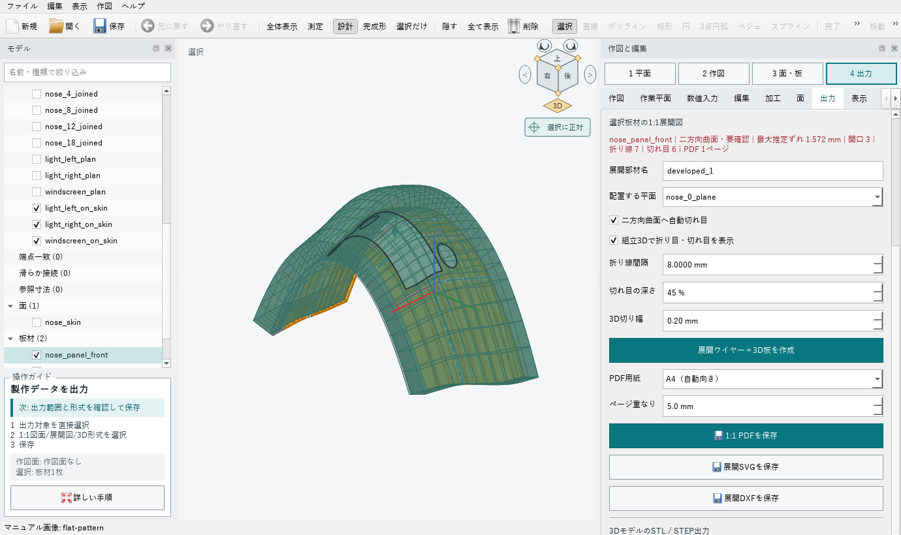
生成方式を最初に選びます。「製作用大部材」は元形状へ少数の長い曲げ板を先に当て、各部材を一枚ずつ展開します。「曲げ紙ペーパークラフト（連続部材）」は、窓とライトを含む一枚の紙を主方向へ滑らかに丸めます。「多面体ペーパークラフト（比較用）」は角面を歪めず展開します。「曲げ帯ペーパークラフト（従来方式）」は従来のプラ板向け結果です。4方式は互いに上書きせず比較できます。ライト穴と窓は開口、短い歪み逃がしはRELIEF_CUT、部材を分ける線はSEPARATING_SEAMとして別に扱います。
製作用大部材: 近似モデルを先に作ってから展開
- 板材を1枚選び、「生成方式」で「製作用大部材（近似モデル→各部材を展開）」を選びます。
- 「最大許容3D偏差」「最小部材幅」「最大部材数」を指定します。最初は板全体を一部材として試し、実測偏差が目標を超えた部材だけ二分します。
- 「大部材の向き」は通常「曲率から自動」。曲面を横長の帯で構成したい場合は、プレビューを見ながらUまたはV方向へ長い部材を固定します。
- 自動境界は窓・ライト穴の途中を横切りません。特定位置で必ず部材を分ける場合は、面タブの「展開片の分割線」で投影ワイヤーを分割線にしてから再生成します。穴を横切る分割線や最小幅未満の部材は理由付きで拒否されます。
- 結果欄で部材数、完全分割線数、開口数、最大3D偏差とRMS偏差を確認します。最大偏差が目標を超えた結果は赤表示で、成功扱いにはなりません。最小幅を下げる、最大部材数を増やす、または手動境界を追加して再計算します。
- 「展開から組立まで3D表示」と組立スライダーで各大部材の曲げを確認します。「この曲げ状態を3Dモデル化」は、選択した部材を三角板の集合ではなく一枚の連続ロフト板として追加します。
- 「製作用近似モデルを別オブジェクトで作成」で100%状態を元板とは別に残します。「ペーパークラフト部品を作成」またはSVG/DXF/PDF保存では、各大部材が一つの閉じた型紙になり、窓とライトは抜き穴として残ります。
曲げ紙・連続部材の手順
- 板材を1枚選び、「生成方式」で「曲げ紙ペーパークラフト（連続部材）」を選びます。
- 「展開方針」は通常「部材優先」を選びます。これは少数の長い部材を保ち、完全分割より短い歪み逃がしを先に使います。「バランス」「精度優先」の順に切れ目候補を増やします。
- 「最大許容3D偏差」に工作上許せる目標値、「最小部材幅」に切れ目の間や橋として残したい幅をmmで入れます。結果欄の最大3D偏差は実際に組み直した形との比較値で、目標を超えると赤表示になります。
- 通常は「曲率から主曲げ方向を自動選択」を使います。断面の向きを意図的に固定するときは「U方向へ滑らかに丸める」または「V方向へ滑らかに丸める」を選びます。
- 「立体再現度」を上げると、滑らかな3D確認面と切れ目候補が細かくなります。展開部品を三角形へ分離する値ではありません。
- 「曲線Vを併用」をオフにすると、途中に紙のブリッジを残した一本線スリットだけを作ります。オンにすると、最初の強い二方向曲げ箇所へ曲線Vを使い、残りをブリッジ付きスリットにします。左右のVは中央で接触せず、紙のつながりが残ります。
- 「切れ込み深さ」は外周から中央ブリッジへ近づく量です。「V字の開き角」で絞り量、「切れ込み曲線追従」でV側辺の曲がりを調整します。窓やライトと交差する線は穴の部分で自動的に分かれます。
- 「展開から組立まで3D表示」をオンにし、「組立過程」を0%から100%へ動かします。途中状態は滑らかな局所回転場で計算するため、再現度10でも計算三角形ごとのしわにはなりません。赤線でスリットとVを確認します。
- 途中状態を残す場合は、30%などで止めて「この曲げ状態を3Dモデル化」を押します。計算三角形を大量の板へ変換せず、窓・ライト穴を持つ一つの連続曲面板が追加されます。100%だけを別に残す場合は「曲げ紙の完成形を別オブジェクトで作成」を押します。元板は変更されません。
- 「ペーパークラフト部品を作成」を押すと、配置平面へ一枚の板として追加され、窓・ライト穴と切れ目も加工形状になります。SVG/DXF/PDFから同じ1:1図を保存できます。現段階ではのりしろを生成しません。
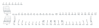
多面体・比較用の手順
- 板材を1枚選び、「生成方式」でまず「多面体ペーパークラフト（新方式）」を選びます。従来結果と比べるときだけ下段の従来方式へ切り替えます。
- 「切れ目の方向」で、上下へ走る「縦だけ」、左右へ走る「横だけ」、曲がりの強い方向を自動判定する「縦横を併用」を選びます。
- 「立体再現度」を1から10で指定します。低い値は角ばりが大きい代わりに面と部品が少なく、高い値は折り目を増やして元形状へ近づきます。元の面や板は変更されません。
- 窓やライト穴の内側にある近似面は生成されません。したがって組立途中、完成近似モデル、STL/STEPのどの状態でも表示線ではなく実際の穴になります。
- 丸い角、フィレット、円錐状の収束を寄せる場合は「必要箇所のV字切れ込みを許可」をオンにします。切断辺の曲がりが「反応する最小曲がり」以上の場合だけ作られます。
- 切れ込み形状は「鋭いV字」または「形状追従の曲線切れ込み」を選びます。曲線方式ではVの左右の切断辺そのものが曲がります。
- 「組立3Dで折り目・切れ目を表示」と「展開から組立まで3D表示」をオンにします。「組立過程」を0%へ動かすと展開状態、100%で角ばった近似完成形です。途中の各面も伸び縮みしません。
- スライダーを例えば30%で止めて「この曲げ状態を3Dモデル化」を押すと、その角度の厚み付き面群を別オブジェクトとして保存します。同じ位置のSTL/STEPも下のボタンから保存できます。
- 再現度で作った100%の完成形だけを残す場合は「近似完成モデルを別オブジェクトで作成」を押します。元板は残り、派生した角面だけが追加・選択されます。
- 「ペーパークラフト部品を作成」は平らな展開片を配置平面へ通常のワイヤー・面・板として追加します。直接切断データならSVG/DXF、印刷なら1:1 PDFを使います。現版の新方式はのりしろを生成しません。
| 処理方法 | 向く工作 | 結果 |
|---|---|---|
| 一枚を優先 | 接着線と部品数を減らしたい工作 | 可能な範囲をつなぎ、伸縮なしで成立しない箇所だけ組立可能な片へ分けます。 |
| 部品へ分割して接着 | 前頭部など形状精度を優先 | 複数の独立した平面片。各片にも必要な切れ込みを併用できます。 |
| 鋭いV字 | 直線切断で簡単に作りたい場合 | 直線2辺のダーツ。切断点数を抑えます。 |
| 形状追従の曲線切れ込み | フィレットやノーズの丸みを細かく寄せる場合 | 曲面を展開した曲線を左右の切断辺へ使います。 |
組立3Dは派生表示で、元の編集形状を三角形メッシュへ変更しません。曲げ紙方式の結果欄には、部材数、完全分割線数、部材を分離しない歪み逃がし数、窓・ライト等の開口数、生成形状を元曲面と直接比較した「最大3D偏差 / RMS」、切り出し寸法からの「寸法誤差」、閉じるV字左右の「継ぎ目」を別々に表示します。これは再現度から換算した推定値ではありません。紙の剛性や曲げ戻りは含まないため、実材料での試作も確認してください。
| 展開線 | 意味 |
|---|---|
| CUT_OUTER / CUT_OPENING | 外周と窓・ライト穴。切断します。 |
| CUT_OUTER（複数） | 各展開片の外周。自動・手動の完全な分割線は、隣り合う2片の外周になります。 |
| RELIEF_CUT | 途中で止まる手動切れ目。外周へ組み込まれたV字はCUT_OUTERに一度だけ出力されます。 |
| FOLD | 曲面を近似する折り線。SVG/PDFでは破線、DXFでは専用レイヤーです。 |
展開結果をCAD内のワイヤーと3D板にする
- 選ぶ
- 展開元の板材を1枚。
- 設定
- 展開部材名、配置する作業平面、組み立て方、立体再現度、V字使用可否、3D切り幅。
- 実行
- 「ペーパークラフト部品を作成」。
- 結果
- 紙片ごとの外周、分割位置で外周へ組み込まれた開口、折り線、途中切れ目が通常のCADワイヤーとして追加され、各紙片が独立した平らな3D板になります。
- 3D切れ目
- RELIEF_CUTを指定幅の細いスロットへ変換します。生成した紙片を個別または複数選択してSTL/STEPへ出力できます。
曲げ途中の3Dモデルを作成・保存する
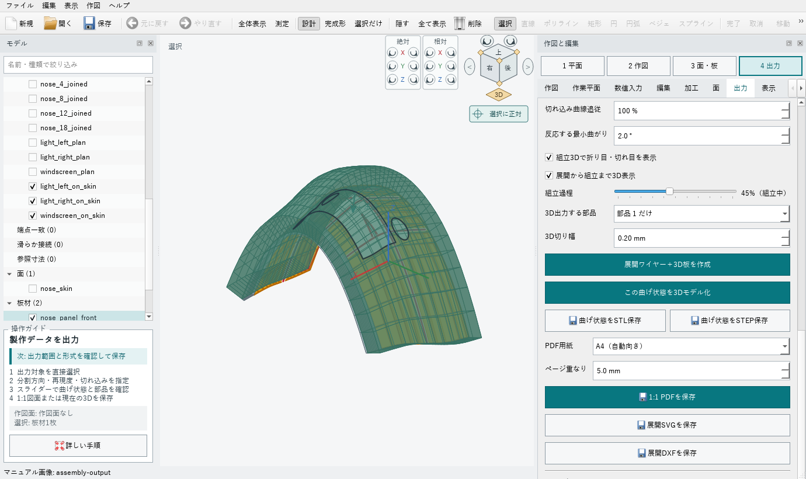
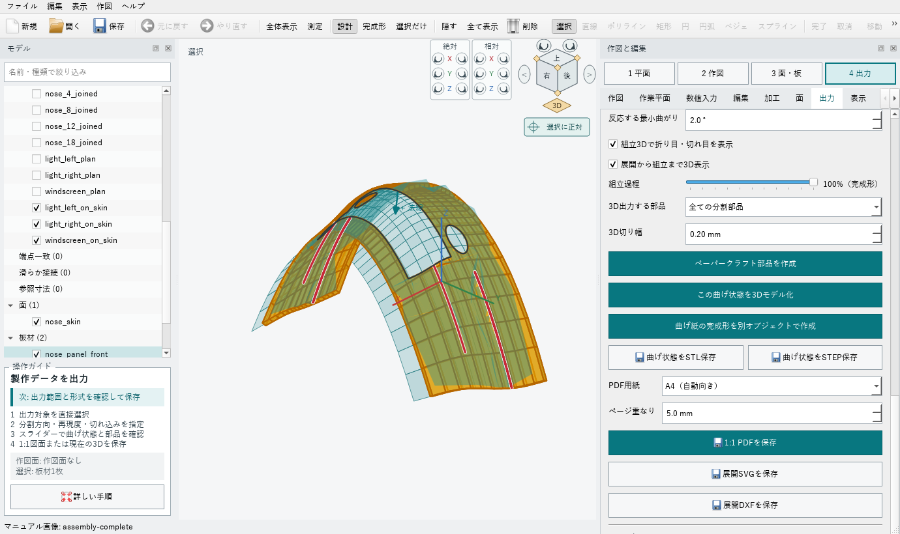
- 選ぶ
- 元の板材を1枚。
- 形を決める
- 「組立過程」を希望位置へ動かします。0%は平面、100%は完成形、その間は曲げ途中です。
- 部品を絞る
- 「3D出力する部品」で「全ての分割部品」または「部品Nだけ」を選びます。
- CAD内へ追加
- 「この曲げ状態を3Dモデル化」。元板の局所厚みを持つ編集可能な三角板群として追加され、作成分が全選択されます。
- 直接保存
- 「曲げ状態をSTL保存」または「曲げ状態をSTEP保存」。プロジェクトへ追加せず、選んだ部品と現在位置だけを閉じた立体として保存します。
任意部分のSTL / STEP
- 一部分
- 中央画面で必要な板材・治具を Ctrl+クリックし、対象を「3D画面で選択した部分」。
- モデル全体
- 対象を「表示中の3Dモデル全体」。不要な部品は先に隠します。
- 確認
- 表示される「3D出力対象: N部品（板材N / 治具N）」を確認。
- 実行
- 「STLを保存」または「STEPを保存」。
| 形式 | 使い分け |
|---|---|
| STL | 3Dプリンター・スライサー。保存時だけ高精度メッシュへ変換します。 |
| STEP | 他の3D CADへ閉じた立体として渡す。板材・治具・登録開口を含みます。 |
| SVG / DXF | 2Dの1:1輪郭、または板材の展開輪郭。 |
| 家庭用・事務用プリンターで1:1印刷。大きい板は重なり付き複数ページ。 |
厚みのない「面」だけはSTL/STEP対象になりません。面を板材にするか、その面から治具を作ってください。
18. 保存・元に戻す・異常終了から復旧する
| 操作 | 手順 |
|---|---|
| 新規 | Ctrl+N。未保存の変更がある場合は確認してから空のプロジェクトを作ります。 |
| 開く | Ctrl+O。.kcd プロジェクトを選びます。 |
| 保存 | Ctrl+S。初回だけ保存先を指定します。 |
| 名前を付けて保存 | Ctrl+Shift+S。別版を残すときに使います。 |
| 元に戻す | Ctrl+Z。作図、点移動、板設定など直前の変更を戻します。 |
| やり直す | Ctrl+Y。戻した変更を再適用します。 |
異常終了後
作業中は自動保存されます。正常に保存されなかった内容がある場合、次回起動時に復旧候補が表示されます。復旧したら、まず「名前を付けて保存」で通常の .kcd ファイルとして保存してください。
配布フォルダ内の START_REVIEW.cmd から起動すると、必要なQt部品を含む正しい環境で review-model.kcd が開きます。
19. 困ったとき
| 状態 | 対処 |
|---|---|
| 視点を変えたいのに形状を選んでしまう | 自由回転は Shift+中ドラッグ。平行移動は中または右ドラッグ。左ボタンは選択・作図専用です。 |
| キューブで意図しない方向へ飛ぶ | 面・角への正対は動かさずクリックした場合だけです。つかんで動かすと、その移動量だけ自由回転します。「全体表示」では向きは変わりません。 |
| 模型が画面から消えた | 上部「全体表示」→ 右上「3D」。まだ見えない場合は「全て表示」。 |
| 2Dにしか見えない | 作図面へ正対している状態です。右上「3D」または黄色い角ボタンで斜め視点へ戻します。 |
| モデルが横倒し | キューブ周囲の絶対/相対XYZ回転を使います。通常クリックは15°、Shift+クリックは5°です。 |
| 線を選びたいのに点が増える | V または「選択」を押して作図道具を終了します。 |
| トリム・延長の赤/緑予告が出ない | 対象と表示中の境界が、見かけだけでなく実際の3D位置で交わることを確認します。延長は伸ばす端側へマウスを置きます。円そのものは延長できません。 |
| クリック位置へ線が来ない | 薄い×・四角・丸が出ている間は候補へ吸着します。その点だけ任意位置へ置くならCtrlを押しながらクリックします。近い点を確実に始点へ使うなら、入力前に右クリックします。 |
| 面を作れない | 表の各行が端点で一続きか確認します。平面の輪郭1は一周して閉じる必要があります。隙間、枝分かれ、異なる作図面、補助線、別行との線の重複がないかも確認します。 |
| ロフトがねじれる | 表の上下矢印で断面を前から後ろの順へ並べ直します。各行をクリックすると、その断面の元線が3Dで強調されます。 |
| 板厚方向が逆 | 板を選び法線矢印を確認し、「+側へ」と「-側へ」を切り替えて「選択中の板材へ設定」。 |
| 板材化できない警告が出る | 途中で潰れる断面や重複線を直します。板厚で表裏が折り返す場合は板厚を小さくするか、+側・中央・-側を切り替えます。 |
| 窓・ライトを開口にできない | 平面図ワイヤーではなく、面へ投影した閉じた輪郭を選びます。板1枚と輪郭全体が同じ板範囲内にあることも確認します。 |
| 飛び出すライトケースを作れない | 最前面は閉じた通常ワイヤー1本、接続先は面または板材1枚を選びます。斜め方向では基準線かXYZが接続先の面を横切る向きか確認します。 |
| 板を分割できない | 分割線が板の端まで届いているか確認します。開口を横切る分割は、展開時に各部品の外周欠き取りへ変換されます。 |
| STL/STEP対象が0 | 板材または治具を選ぶか、「表示中の3Dモデル全体」へ変更します。厚みのない面・ワイヤーは3D出力対象外です。 |
| Qt platform pluginエラー | kachakacha_cad.exe だけを配布フォルダから取り出していないか確認し、フォルダごと置いたまま START_REVIEW.cmd を実行します。 |
| マニュアルを開けない | アプリの「ヘルプ」→「操作マニュアル」、または配布フォルダの OPEN_MANUAL.cmd。manual-assets フォルダを manual.html と同じ場所に置きます。 |
| 使用ライブラリや模型データの権利を確認したい | 「ヘルプ」→「使用ライブラリと権利」。配布フォルダの legal にライセンス全文、著作権表示、ソース提供方法があります。 |
迷ったときは左下「操作ガイド」の水色欄を確認してください。現在の道具が次に求めている点・線を消えずに表示します。画面最下部には、作成完了、エラー、操作できない理由など一時的な結果が表示されます。
20. 現在の制限と実用上の回避方法
| 制限 | 現在の回避方法 |
|---|---|
| 可変板厚と曲面開口を同じ板へ設定した立体出力 | 窓・ライト穴が必要な板は一定板厚で作るか、開口部分を別部品として設計します。 |
| ベジェ・B-splineの厳密な平行オフセット | オフセット複製後、制御点を測定値に合わせて調整します。 |
| 円の延長、閉じたポリラインの直接トリム | 円は閉じていて端がないため延長できません。円の一部を除く場合は2本以上の境界でトリムします。閉じたポリラインは分割してから不要側を削除します。 |
| 強い二方向曲面の1:1展開 | 「最大3D偏差 / RMS」「寸法誤差」「継ぎ目」を確認します。許容できない場合は再現度・切れ目条件を変えるか、板を少数の製作可能な範囲へ手動分割します。 |
| 一枚部品の途中で材料が完全に途切れる開口 | 開口をまたぐ分割は外周欠き取りへ自動変換されます。残る材料が上下で完全に分離する場合は、手動分割線を追加して別部品にします。 |
| 面上ワイヤーを曲面上で直接描く高度な方式 | 現版では平面図から面へ投影します。平面断面では作業平面へ直接作図できます。 |
主編集対象はワイヤー、面、板、作業平面です。STLメッシュは出力時に生成するだけで、設計途中の形状を三角形編集へ変換しません。
21. 操作早見表
| キー / マウス | 機能 | キー / マウス | 機能 |
|---|---|---|---|
| V | 選択 | D | 作図点 |
| L | 直線 | P | ポリライン |
| R | 矩形 | C | 円 |
| A | 円弧 | B | ベジェ |
| S | スプライン | I | 端点一致 |
| T | 接線接続 | Shift+T | 曲率接続 |
| X | トリム | E | 延長 |
| M | 測定 | ||
| 入力前の右クリック | 近くの構造点から作図開始 | 入力後のEnter / 右クリック | 完了または取消 |
| Ctrl+クリック | 選択中: 複数選択 / 作図中: 吸着なし | Delete | 選択削除 |
| ホイール | 拡大縮小 | 中 / 右ドラッグ | 平行移動 |
| Shift+中ドラッグ | 自由回転 | 左ドラッグ | 点移動。視点は回さない |
| Ctrl+N | 新規 | Ctrl+O | 開く |
| Ctrl+S | 保存 | Ctrl+Shift+S | 名前を付けて保存 |
| Ctrl+Z | 元に戻す | Ctrl+Y | やり直す |
| Ctrl+H | 選択を隠す | Ctrl+Shift+H | 全て表示 |
| Ctrl+1 | 設計表示 | Ctrl+2 | 完成形だけ表示 |
| Ctrl+3 | 選択だけ表示 |
最短の製作手順
- 作業平面を選んで正対。
- 点グリッドとスナップを設定し、断面や開口平面図を作図。
- 断面を順番に複数選択し、面または3D板を作成。
- 窓・ライト平面図を面へ投影し、板と一緒に選んで開口へ追加。
- 飛び出すライトは最前面輪郭と本体面を選び、根元とケース側面を作成。
- 必要なら板を手動分割し、展開精度を確認。
- 板・治具を中央で選び、STL/STEPまたは1:1図面を出力。
すべての画像はこの製品版を自動操作して撮影しています。画像をクリックすると原寸表示できます。
22. 全機能リファレンス
ここは画面にある全コマンドの索引です。「何を先に選ぶか」「押した後に何をするか」「何が作られるか」を確認できます。詳しい作例は表内の章番号を参照してください。
ファイル・履歴・表示
| 機能 | 事前条件 | 操作と結果 |
|---|---|---|
| 新規 / 開く / 保存 / 名前を付けて保存 | 保存前の変更があれば確認 | 新規プロジェクト、.kcd読込、上書き、別名保存。詳細は18章。 |
| 元に戻す / やり直す | 編集履歴 | 直前の形状・表示設定を戻す/再適用。作図中の点だけを消す操作はEsc。 |
| 全体表示 | なし | 現在の向きを変えず、表示中モデルが収まる倍率と中心へ合わせます。 |
| 設計 / 完成形 / 選択だけ | 「選択だけ」は対象選択 | 一時的な見え方を切替。保存状態や履歴は変更しません。詳細は3章。 |
| 隠す / 全て表示 | 「隠す」は対象選択 | 選択物の保存される表示状態を変更。左一覧のチェックと同じです。 |
| 削除 | 要素を選択 | 選択要素と必要な依存関係を確認して削除。Ctrl+Zで復元できます。 |
| モデル検索 / 表示チェック | なし | 名前・「ワイヤー」「板材」等で絞り込み。チェックで個別表示。詳細は3章。 |
| 名前を変更 | 左一覧で項目を選択 | F2 または右クリック「名前を変更…」。投影・面・板・開口・近似・積層・拘束・グループ所属など参照する全箇所が一括で追従します。近似モデルの派生（境界・部材面）は単独変更不可で、近似モデル名の変更に連動します。グループ名も同様に変更できます。 |
| 表示タブ | なし | 通常線・補助線の色/太さ/線種、面・板の塗り/透明度/輪郭、背景、主点・副点の色を変更。次回起動にも保持します。詳細は3章。 |
| 視点キューブ | なし | 面・角クリックで正対、ドラッグで連続回転。絶対/相対X/Y/Z矢印は15°、Shift併用で5°回転。詳細は2章。 |
| 選択に正対 | 作図点・ワイヤー・面・板・平面を選択 | 選択形状へ正対し、中央へ拡大表示します。作図点は現在の向きを保って中央へ移します。 |
作業平面・作図・数値入力
| 機能 | 選ぶ/入力するもの | 操作と結果 |
|---|---|---|
| この向きで見る | 標準面、点+法線、3点、オフセット、軸回転のいずれか | 作業平面を保存せず、その紙へ正対。詳細は4章。 |
| 平面を作成 | 上記方法と名前、共通オフセット・角度 | 3D空間へ再利用できる紙を追加。全方式で距離と角度を併用できます。 |
| 回転軸に使用 | 基準線に設定済みの直線 | 直線の点と方向を作業平面の回転軸欄へ設定します。 |
| 選択 / 作図点 / 直線 / ポリライン / 矩形 | 作図面 | 中央で対象を選ぶ、位置基準点を残す、または左下ガイドの順に点を置く。詳細は6章。 |
| 円 / 円弧 / ベジェ / スプライン | 作図面 | 円弧は3点、両端＋半径、始点＋接線/法線方向から選択。中心・通過点・制御点はガイド順に指定。スプラインは4点以上でEnter。 |
| カーソル実寸 / 実寸で確定 | 最初の点を配置済み | 数字を打つと主寸法へ自動入力。Tabで副寸法、Enterで確定。直線/ポリライン/円弧/ベジェ/スプラインの距離・角度、矩形の幅・高さ、円の半径に計算式も使えます。 |
| 補助線として作図 | 作図道具 | スナップ・測定には使うが、面と出力から除外する線を作ります。 |
| スナップ / 点グリッド | 交点・作図点・端点、主点間隔、1/2・1/3・1/4副点、基準X/Y | 通常は構造点を格子より優先し、外では自由位置。Ctrl中は完全解除。入力前の右クリックは近くの構造点を広めに探して始点にします。「画面で基準を合わせる」は格子点を図形点までドラッグし、基準X/Yへ反映。詳細は5・6章。 |
| 完了 / 取消 | 入力途中 | ポリライン・スプラインを確定、または未確定点を破棄。 |
| ワイヤーを追加 | 3D直線/ベジェ、平面上の直線/円/円弧/ベジェの値 | 座標からワイヤーを作成。平面拘束なし・編集基準・固定を選べます。詳細は7章。 |
編集・拘束・加工
| 機能 | 事前選択 | 操作と結果 |
|---|---|---|
| 制御点ドラッグ | ワイヤー1本 | 表示された端点・中心・制御点を直接移動。1ドラッグが1回のUndoです。 |
| 変更を適用 | ワイヤーまたは作業平面1個 | XYZ、半径、角度、平面との関係、補助線設定を数値更新。 |
| 長さ固定 / 角度固定 / 半径固定 | 対応する直線・円・円弧 | 値を保持する拘束を追加。水平0°・垂直90°は角度欄へ即入力。 |
| 平行オフセット複製 | 同一作図面のワイヤー1本以上 | 左右と距離を指定し、紫の予告位置へ複製。 |
| 移動 / コピー | ワイヤー1本以上 | 基準点→移動先。左下ガイドに現在の点を表示。 |
| 回転 / ミラー複製 | ワイヤー1本以上 | 回転は中心→基準→回転先。ミラーは軸2点、または設定済み基準線。 |
| 分割 | 円以外のワイヤー1本 | 線上の位置をクリックし2本へ分けます。 |
| トリム / 延長 | なし | 線・曲線部分または端側を直接指し、赤い削除区間 / 緑の追加区間を確認してクリック。直線・開ポリライン・円弧・ベジェ・B-splineを元の種類のまま処理します。 |
| 端点一致 / 接線接続 / 曲率接続 | 端点を直接指定 | 固定側→追従側。G1は接線、G2は接線と曲率を合わせます。 |
| 一致解除 / 滑らか解除 | 関係するワイヤー | 一致全体、またはG1/G2だけを解除し、現在形状は維持。 |
| 結合 / 2線を交点まで | 順番に並ぶ複数線 / 直線2本 | 1ポリライン化、または選んだ2線を同じ交点までトリム・延長。 |
| 基準線に設定 / 基準解除 | 直線1本 / なし | ミラー、平面回転、ライトケース方向で使う明示的な基準を設定/解除。 |
| C面取り / R丸め | 交差または延長交差する直線2本 | 残す側と切戻し/半径を指定して角を加工。詳細は10章。 |
面・板・治具
| 機能 | 事前選択 | 操作と結果 |
|---|---|---|
| 表の輪郭・断面から面を作成 | 輪郭・外形・断面を1行ずつ登録。各行は端点接続した複数線に対応 | 自由輪郭平面、2断面曲面、通常ロフト、外形ガイド付きロフトを作成。単線だけなら3D選択からの簡易作成も可能。詳細は11章。 |
| 選択ワイヤーを面へ投影 | 同じ平面図上のワイヤー1本以上 | 指定面へ投影し、元図に追従する面上ワイヤーを作成。詳細は13章。 |
| 根元ワイヤーとケース側面を作る | 最前面閉輪郭1本 + 面/板1枚 | 自動法線、基準線、任意XYZ方向で飛び出すケースを作成。詳細は14章。 |
| 選択ワイヤーから3D板を直接作る | 面作成と同じ断面選択 | 内部の設計面と厚み付き板を一度に作成。 |
| この面を板材にする | 面1枚 | 始端/終端板厚、+側/中央/-側、材質を持つ3D板を作成。 |
| 選択中の板材へ設定 | 板材1枚 | 板厚、方向、材質を作り直さず更新。 |
| 選択輪郭をこの位置へ複製 | 板材1枚 + 投影ワイヤー | +側表面、中央、-側表面へ板厚追従ワイヤーを作成。 |
| この面から成形治具を作る | 面1枚 | 外型/内型、隙間、厚みを持つ3D治具を作成。詳細は15章。 |
| 選択中の治具へ設定 | 治具1個 | 型の側、隙間、厚みを更新し、最小肉厚を再確認。 |
| 開口に追加 / 開口から外す | 板材1枚 + 閉じた投影輪郭 | 窓・ライト穴を板の表示、展開、STL/STEPへ反映/解除。 |
| 切れ目に追加 / 切れ目から外す | 板材1枚 + 投影ワイヤー | 途中で止まる切れ目として登録/解除。 |
| 分割線にする / 分割線を解除 | 板材1枚 + 投影ワイヤー | 平面・一方向曲面・二方向曲面の展開計算を切り、独立した紙片へ分ける線として登録/解除。 |
| 選択中の板材を2分割 | 板材1枚 | 赤い予告線を確認し、U/V方向の指定位置で2部品だけに分割。詳細は16章。 |
出力・測定・情報
| 機能 | 事前選択/設定 | 操作と結果 |
|---|---|---|
| SVGを保存 / DXFを保存 | 作業平面、全線または選択線 | 平面上の1:1図面をmm単位で保存。 |
| 組立3Dで折り目・切れ目を表示 | 板材1枚、展開条件 | 完成位置へ折り目を青破線、切れ目を赤線で一時表示。 |
| 展開から組立まで3D表示 | 板材1枚、生成方式、立体再現度、組立過程 | 曲げ紙方式は滑らかな紙面、多面体方式は剛体パネルとして、平面0%から完成100%まで表示。 |
| 生成方式 | 板材1枚 | 少数の大きな製作用部材、連続一枚の曲げ紙、歪みのない多面体、従来の曲げ帯方式を比較切替。 |
| 曲げ紙/近似完成モデルを別オブジェクトで作成 | 板材1枚、曲げ紙または多面体方式、立体再現度 | 元板を変更せず100%組立状態を追加。曲げ紙は窓・ライト穴付きの連続Loft板1個、多面体は独立した厚み付き面群。 |
| ペーパークラフトとして分割・切れ目を生成 | 二方向曲面の板材1枚 | 展開可能な曲げ面を維持しつつ、一枚折り／部品分割、V字の使用可否、直線V／形状追従曲線を指定。再現度は全方式へ適用。 |
| ペーパークラフト部品を作成 | 板材1枚、配置平面、展開方式、切り幅 | 編集可能な外周・開口・折り線・切れ目と、紙片またはV字外周を持つ平らな厚み付き板を作成。 |
| この曲げ状態を3Dモデル化 | 板材1枚、組立過程、全体または部品N | スライダー位置を局所板厚付きの編集可能な3D板群として追加し、作成分を選択。 |
| 曲げ状態をSTL / STEP保存 | 板材1枚、組立過程、全体または部品N | 平面・途中・完成の任意位置を、選んだ分割部品だけでも閉じた3D形状として保存。 |
| 1:1 PDF / 展開SVG / 展開DXF | 板材1枚、折り線・切れ目条件 | 家庭印刷または切断用の展開データを保存。PDFはA4/A3と重なりを指定。 |
| STLを保存 / STEPを保存 | 選択した板・治具、または表示中全体 | 任意部分またはモデル全体を閉じた3Dモデルとして保存。 |
| 測定 | 2点間、3点角度、要素モード | 3D距離、XYZ差、3点角度、半径、長さ、接線角、曲率法線角を中央画面で測定。詳細は9章。 |
| 寸法を残す / 測定を消去 | 測定結果 / 一時測定 | 追従する参照寸法として保存、または形状を変えず一時表示だけ消去。 |
| 参照寸法の表示 / 削除 | 保存済み参照寸法 | 情報タブまたはモデル一覧で表示を切替、不要な寸法を削除。 |
| 選択情報 | 任意要素1個 | 座標、種類、元形状、板厚、材質、開口、切れ目、工作判定、治具肉厚を表示。 |
| 詳しい手順 | 任意のタブ・道具 | 左下ガイドの現在機能に対応する本マニュアルの章を直接開きます。 |
| 使用ライブラリと権利 | ヘルプメニュー | Qt、Open CASCADE、模型データの扱いを表示し、同梱した詳細文書を開きます。 |